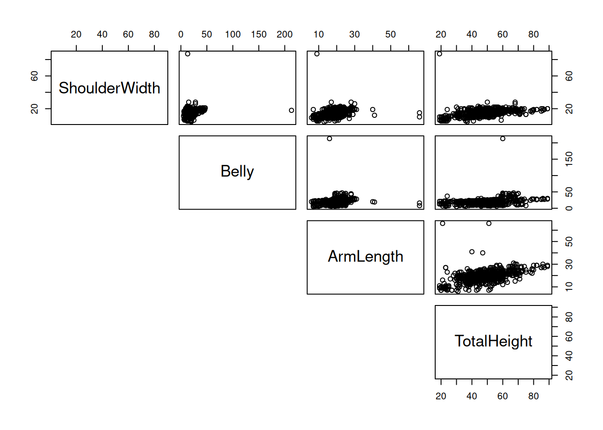
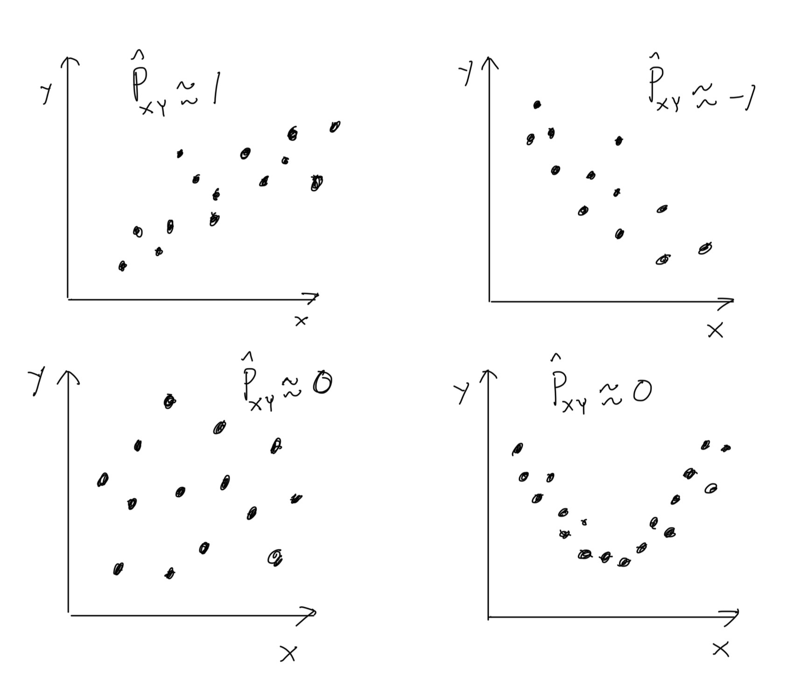
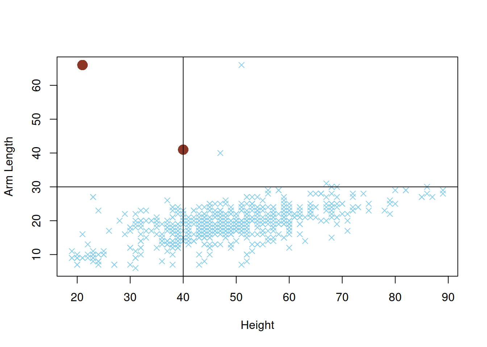
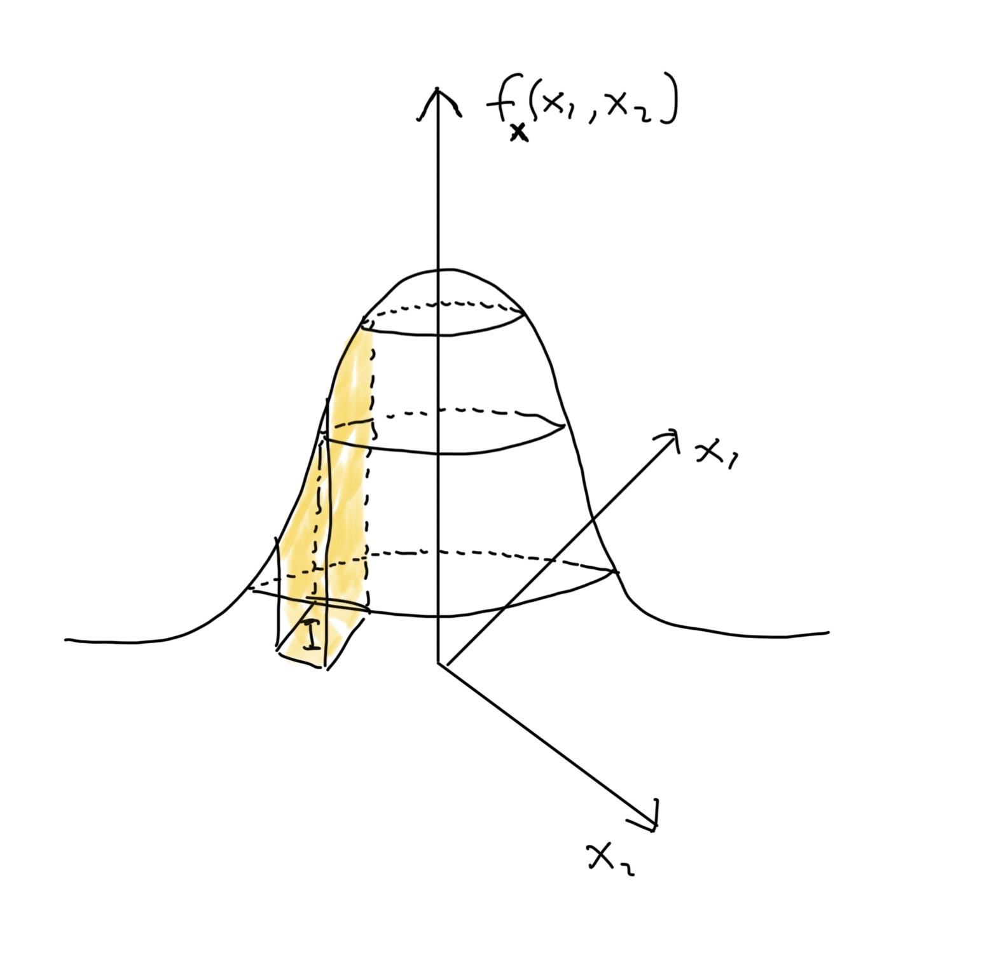
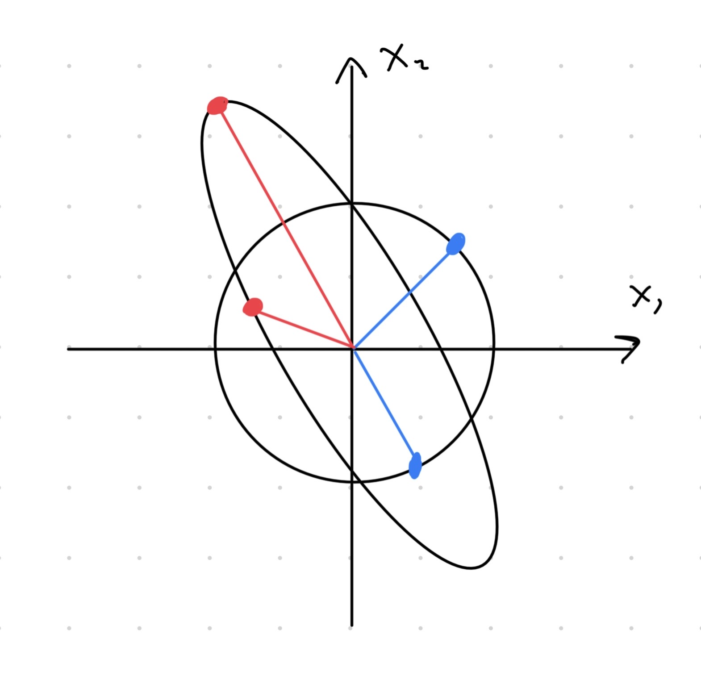
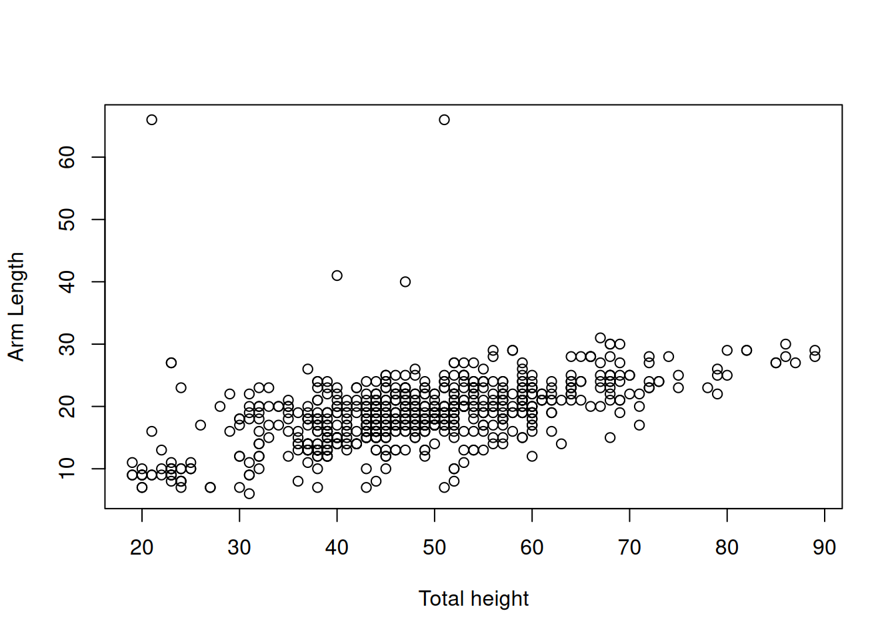
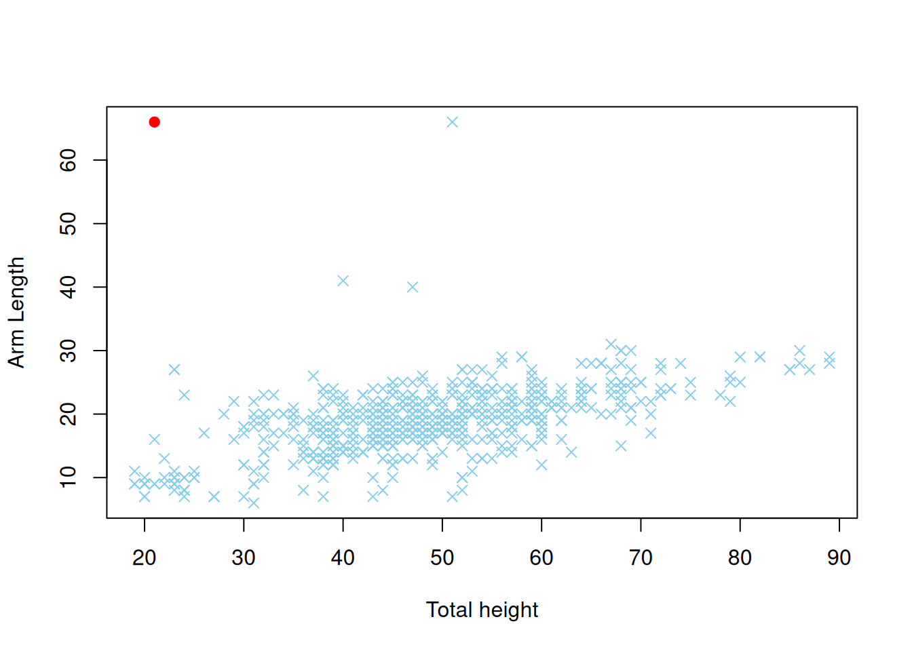

Luku 2 Moniulotteiset jakaumat
Kurssilla Tilastotieteen perusteet käsiteltiin (yksiulotteiset) satunnaismuuttujat. Satunnaismuuttuja on funktio, joka saa lukuarvon (kokonaislukuluku \(\mathbb{Z}\), rationaaliluku \(\mathbb{Q}\), Reaaliluku \(\mathbb{R}\)) satunnaisilmiön toteuman perusteella. Satunnaismuuttuja voi olla diskreetti kuten \(X_1 = \mathrm{nopanheiton\ tulos}\) tai jatkuva kuten \(X_2 = \mathrm{Bussin\ saapumisaika\ pysäkille}\). Satunnaismuuttujan \(Y\) käyttäytymistä mallintaa sen jakauma \(\mathbb{P}\left(Y\in A\right)\), jossa \(\{Y\in A\}\) on mahdollinen tapahtuma. Esimerkiksi tapahtumaa “nopanheiton tulos on 1 tai 5” vastaava todennäköisyys on \(\mathbb{P}\left(X_1\in \{2, 5\}\right) = 2/6 = 1/3\), kunhan noppa on reilu. Kaiken informaation satunnaismuuttujan \(Y\) jakaumasta sisältää kertymäfunktio \(F_Y(y) = \mathbb{P}\left(Y \leq y\right)\). Jos satunnaismuuttuja \(Y\) on diskreetti, niin sen kertymäfunktio voidaan kirjoittaa pistetodennäköisyysfunktion \(p_Y(x) = \mathbb{P}\left(Y = x\right)\) avulla \[\begin{equation} \tag{2.1} F_Y(y) = \sum_{x\leq y} p_Y(x). \end{equation}\] Jos taas satunnaismuuttuja \(Y\) on jatkuva, niin sen kertymäfunktio voidaan kirjoittaa tiheysfunktion \(f_Y(x)\) avulla integraalina \[\begin{equation*} \tag{2.2} F_Y(y) = \int_{-\infty}^{y} f_Y(x)\, \mathrm{d}x. \end{equation*}\] Jakauman sijainnnista ja hajonnasta antavat tietoa teoreettiset suureet kuten odotusarvo \(\mathbb{E}\left(Y\right)\) ja varianssi \[\begin{equation} \tag{2.3} \mathrm{Var}\left(Y\right) = \mathbb{E}\left(\left(Y - \mathbb{E}\left(Y\right)\right)^2\right). \end{equation}\] Myös muita jakaumaa kuvaavia teoreettisia suureita on olemassa: vinous, huipukkuus, kvantiilit, \(\ldots\) Tilastotieteen sovelluksissa on kuitenkin yleensä saatavilla vain otos \(y_1,\ldots, y_n\) satunnaismuuttujasta \(Y\) eikä satunnaismuuttujan teoreettisia ominaisuuksia tunneta. Tällöin satunnaismuuttujan \(Y\) jakaumaa vastaavat teoreettiset suureet täytyy estimoida otoksen avulla. Esimerkiksi odotusarvo voidaan estimoida keskiarvolla \[\begin{equation*} \bar y = \frac{1}{n}\sum_{i = 1}^n y_i \end{equation*}\] ja varianssi voidaan estimoida otosvarianssilla \[\begin{equation} \tag{2.4} s_Y^2 = \frac{1}{n-1}\sum_{i = 1}^n\left(y_i - \bar y\right)^2. \end{equation}\] Kertaa tarvittaessa edellämainittuja asioita kurssilta Tilastotieteen perusteet.
Yllä kuvattu asetelma on usein liian yksinkertainen käytännön datatietieteen sovelluksissa, sillä monesti dataa on saatavilla useista eri muuttujista.
Esimerkki 2.1 (Moniulotteinen aineisto) Taulukossa 2.1 näkyy neliulotteinen aineisto ihmisen kehon eri osien mittauksista (yksikkö: tuuma). Kaikki mitatut muuttujat ShoulderWidth, Belly, ArmLength ja TotalHeight ovat tässä tapauksessa jatkuvia. Tuntuisi luonnolliselta, että muuttujien välillä on riippuvuussuhteita. Esimerkiksi ehkä pidemmällä ihmisellä on pidemmät kädet? Jos näin on, niin menetämme informaatiota analysoidessa muuttujia erikseen.
| ShoulderWidth | Belly | ArmLength | TotalHeight |
|---|---|---|---|
| 18 | 18 | 22 | 52 |
| 22 | 18 | 28 | 56 |
| 18 | 14 | 21 | 53 |
| 20 | 11 | 24 | 45 |
| 14 | 13 | 25 | 47 |
| 19 | 14 | 20 | 60 |
Hyvä vaihtoehto visualisoida dataa voisi olla hajontakuvio. Kuvaajassa olisi kuitenkin tällöin neljä akselia (ulottuvuutta), joten meidän ihmisten (ainakin minun) on mahdoton tulkita hajontakuviota! Vaihtoehtoisesti hajontakuviot voi piirtää pareittain kuten kuvassa 2.1.

Kuva 2.1: Hajontakuviot muuttujista pareittain.
Esimerkiksi kuvan 2.1 alareunassa olevassa hajontakuviossa muuttuja TotalHeight on \(x\)-akselilla ja muuttuja ArmLength on \(y\)-akselilla. Kyseisen hajontakuvion perusteella näyttää, että muuttujien ArmLength ja TotalHeight välillä tosiaan on lineaarinen riippuvuus – keskimäärin pidemmällä ihmisellä on pidemmät kädet. Toki hajontakuviossa näkyy myös muutamia oudokkeja (eng: outlier), jotka ovat poikkeus säännöstä. Huomaa, että pareittaiset hajontakuviot eivät kerro koko tarinaa. Voi nimittäin olla, että tietynlaiset muuttujien väliset riippuvuudet eivät näy hajontakuvioissa.
Kurssilla käymme läpi perusmenetelmiä, joilla voi tehdä tilastollista analyysiä moniulotteisiin aineistoihin liittyen. Kurssin menetelmät toimivat pohjana vaativimille moniulotteisille data-analyyseille. Moniulotteisen data-analyysin tavoitteena voi esimerkiksi olla
- Muuttujien riippuvuussuhteiden ymmärtäminen
- Yhden muuttujan ennustaminen muilla muuttujilla
- Dimensioiden pienennys (eng: dimension reduction) ennen varsinaista analyysiä
Kuitenkin ensin täytyy ymmärtää moniulotteiseen dataan liittyvää todennäköisyyslaskentaa, sillä moniulotteista dataa mallinnetaan moniulotteisten satunnaismuuttujien eli satunnaisvektoreiden avulla. Luvussa 2.1 määrittelemme stokastisen riippuvuuden käsitteen formaalisti, jotta voimme ymmärtää satunnaismuuttujien välisiä riippuvuussuhteita. Luvussa 2.2 määrittelemme satunnaisvektorin, ja siihen liittyvät peruskäsitteet. Erittäin tärkeälle jakaumaperheelle eli moniulotteiselle normaalijakaumalle omistetaan oma luku 2.3. Luvussa 2.4 syvennämme satunnaisvektoreihin liittyvää todennäköisyysteoriaa käsittelemällä ehdolliset jakaumat. Tärkeimmät moniulotteista jakaumaa kuvaavat teoreettiset suureet kuten odotusarvo ja kovarianssi määritellään luvussa 2.5. Samassa luvussa käydään estimoinnin perusteita liittyen moniulotteisiin jakaumiin.
2.1 Stokastinen riippumattomuus
Intuitiivisesti ajateltuna kaksi satunnaismuuttujaa \(X\) ja \(Y\) ovat stokastisesti riippumattomia, jos tieto muuttujan \(X\) arvosta ei anna mitään lisätietoa muuttujan \(Y\) arvosta ja päinvastoin. Toisaalta satunnaismuuttujat \(X\) ja \(Y\) ovat stokastisesti riippuvia, jos tieto \(X\):n arvosta antaa jotain lisätietoa \(Y\):n arvosta ja päinvastoin.
Esimerkki 2.2 (Riippuvuus intuitiivisesti)
Määritellään satunnaismuuttujat \(X = \mathrm{Markkinointi\ (euroissa)}\) ja \(Y = \mathrm{Myynti\ (euroissa)}\). Todennäköisesti edellä annetut satunnaismuuttujat riippuvat toisistaan. Mitä enemmän yritys markkinoi, sitä enemmän myynti kasvaa (ainakin johonkin pisteeseen asti).
Määritellään satunnaismuuttujat \(X = \mathrm{kolikonheiton\ tulos}\) ja \(Y = \mathrm{nopanheiton\ tulos}\). Muuttujat \(X\) ja \(Y\) ovat riippumattomia, jos kyseessä on aivan tavallinen noppa ja aivan tavallinen kolikko. Jos heitän ensin kolikko ja saan klaavan, niin tämä tulos ei kerro mitään siitä, minkä silmäluvun tulen saamaan heittämällä seuraavaksi noppaa.
Yllä olevissa esimerkeissä satunnaismuuttujien välinen riippuvuus/riippumattomuus oli helposti pääteltävissä. Aina tilanne ei kuitenkaan ole niin yksinkertainen:
- Olkoon \(X_1\) ja \(X_2\) riippumattomia \(\pm 1\) arvoisia satunnaismuuttujia niin, että
\[\begin{equation*}
\mathbb{P}\left(X_i = -1\right) = \mathbb{P}\left(X_i = +1\right)
= \frac{1}{2}, \quad i\in\{1,2\}.
\end{equation*}\]
Määritellään satunnaismuuttuja \(Y = X_1 X_2\). Ovatko satunnaismuuttujat \(Y\) ja \(X_1\) stokastisesti riippumattomia?
- Intuitiivisesti ajateltuna muuttujat \(Y\) ja \(X_1\) eivät välttämättä ole riippumattomia, koska \(Y\) määritellään muuttujan \(X_1\) avulla. Tästä huolimatta muuttujat \(Y\) ja \(X_1\) ovat stokastisesti riippumattomia!
Seuraavaksi annamme stokastisen riippumattomuuden/riippuvuuden määritelmän kahden satunnaismuuttujan välillä.
Määritelmä 2.1 (Stokastinen riippumattomuus) Satunnaismuuttujat \(X\) ja \(Y\) ovat riippumattomia, jos kaikille \(x\in\mathbb{R}\) ja \(y\in\mathbb{R}\) pätee \[\begin{equation*} \mathbb{P}\left(X\leq x \cap Y\leq y\right) = \mathbb{P}\left(X\leq x\right) \mathbb{P}\left(Y\leq y\right). \end{equation*}\] Jos jollekin \((x,y)\)-yhdistelmälle pätee \[\begin{equation*} \mathbb{P}\left(X\leq x \cap Y\leq y\right) \neq \mathbb{P}\left(X\leq x\right) \mathbb{P}\left(Y\leq y\right), \end{equation*}\] niin satunnaismuuttujat \(X\) ja \(Y\) ovat riippuvia.
Eli satunnaismuuttujat ovat riippumattomia, jos niitä vastaava “yhteistodennäköisyys” voidaan aina kirjoittaa tulomuodossa. Määritelmä 2.1 voidaan antaa myös tapahtumien avulla. Muuttujat \(X\) ja \(Y\) ovat riippumattomia, jos kaikille tapahtumille \(\{X\in A\}\) ja \(\{Y\in B\}\) pätee \[\begin{equation*} \mathbb{P}\left(X\in A \cap Y\in B\right) = \mathbb{P}\left(X\in A\right) \mathbb{P}\left(Y\in B\right). \end{equation*}\] Toisaalta määritelmä 2.1 yleistyy myös useammalle satunnaismuuttujalle. Eli muuttujat \(X_1, \ldots, X_d\) ovat riippumattomia, jos kaikille \(x_1\in\mathbb{R}, \ldots, x_d\in\mathbb{R}\) pätee \[\begin{equation*} \mathbb{P}\left(X_1\leq x_1 \cap \cdots \cap X_d\leq x_d\right) = \mathbb{P}\left(X_1\leq x_1\right) \cdots \mathbb{P}\left(X_d\leq x_d\right). \end{equation*}\] Kuten luvussa 2.2 tullaan näkemään, niin satunnaisvektoreiden käsittely yksinkertaistuu huomattavasti, jos kaikki vektorin muuttujat ovat riippumattomia.
Seuraavaksi annamme esimerkin, jossa tarkistetaan kahden satunnaismuuttujan välinen riippumattomuus/riippuvuus.
Esimerkki 2.3 (Kolikonheitto) Heitetään kolikkoa kolme kertaa. Yhden kolikonheiton tulos on joko klaava (\(T\)) tai kruuna (\(H\)) js kolikko on reilu eli \[\begin{equation*} \mathbb{P}\left(T\right) = \mathbb{P}\left(H\right) = \frac{1}{2}. \end{equation*}\] Kolikonheitot ovat myös toisistaan riippumattomia.
Määritellään kaksi satunnaismuuttujaa:
\(X = \text{Klaavojen määrä kahdella ensimmäisellä heitolla}\).
\(Y = \text{Klaavojen määrä kahdella viimeisellä heitolla}\).
Tarkoitus on selvittää ovatko muuttujat \(X\) ja \(Y\) riippumattomia. Tarkastellaan seuraavia tapahtumia:
Tapahtuma \(1\): \(\{X = 0\}\)
Tapahtuma \(2\): \(\{Y = 0\}\)
Tapahtuma \(3\): \(\{X = 0 \cap Y = 0\}\).
Kaikki mahdolliset heittosarjat ovat \[\begin{equation*} \{\underbrace{(HHH)}_{s_1}, \underbrace{(HHT)}_{s_2}, \underbrace{(HTH)}_{s_3}, \underbrace{(THH)}_{s_4}, \underbrace{(TTH)}_{s_5}, \underbrace{(THT)}_{s_6}, \underbrace{(HTT)}_{s_7}, \underbrace{(TTT)}_{s_8}\} \end{equation*}\] Jokaisen heittosarjan \(s_i\) todennäköisyys on \((1/2)^3 = 1/8\), koska heitot ovat riippumattomia. Tapahtuma \(1\) toteutuu heittosarjoilla \(s_1\) ja \(s_2\). Heittosarjat ovat toisensa poissulkevia, joten \(\mathbb{P}\left(X = 0\right) = \mathbb{P}\left(s_1 \cup s_2\right) = \mathbb{P}\left(s_1\right) + \mathbb{P}\left(s_2\right) = 1/8 + 1/8 = 1/4\). Samanlaisella päättelyllä saadaan \(\mathbb{P}\left(Y = 0\right) = 1/4\). Toisaalta tapahtuma 3 toteutuu vain heittosarjalla \(s_1\), joten \(\mathbb{P}\left(X = 0 \cap Y = 0\right) = \mathbb{P}\left(s_1\right) = 1/8\). Saimme siis \[\begin{equation*} \frac{1}{16} = \left(\frac{1}{4}\right)^2 = \mathbb{P}\left(X = 0\right)\mathbb{P}\left(Y = 0\right) \neq \mathbb{P}\left(X = 0 \cap Y = 0\right) = \frac{1}{8}, \end{equation*}\] joten muuttuvat \(X\) ja \(Y\) eivät ole riippumattomia.
Lineaarinen riippuvuus on tilastotieteessä erityisen tärkeä riippuvuuden muoto. Kahden satunnaismuuttujan \(X\) ja \(Y\) välistä lineaarista riippuvuutta mittaa kovarianssi, \[\begin{equation} \tag{2.5} \mathrm{Cov}\left(X, Y\right) = \mathbb{E}\left(\left(X - \mathbb{E}\left(X\right)\right) \left(Y - \mathbb{E}\left(Y\right)\right)\right). \end{equation}\] Jos satunnaismuuttujista \(X\) ja \(Y\) on otokset \(x_1, \ldots, x_n\) ja \(y_1, \ldots, y_n\), niin kovarianssia voidaan estimoida otoskovarianssilla \[\begin{equation} \tag{2.6} s_{XY} = \frac{1}{n - 1}\sum_{i = 1}^n\left(x_i - \bar x\right) \left(y_i - \bar y\right), \end{equation}\] jossa \(\bar y\) on otosta \(y_1, \ldots, y_n\) vastaava keskiarvo. Kovarianssia voidaan tulkita seuraavasti:
Kun \(\mathrm{Cov}\left(X, Y\right) > 0\), niin muuttujien \(X\) ja \(Y\) välillä on kasvava lineaarinen riippuvuus
Kun \(\mathrm{Cov}\left(X, Y\right) < 0\), niin muuttujien \(X\) ja \(Y\) välillä on vähenevä lineaarinen riippuvuus
Kovarianssin suuruuteen vaikuttaan muuttujien \(X\) ja \(Y\) skaalat, joten kovarianssin suuruutta \(\left|\mathrm{Cov}\left(X, Y\right)\right|\) on vaikea tulkita. Tämän vuoksi kovarianssi usein normalisoidaan jakamalla satunnaismuuttujia vastaavilla keskihajonnoilla, jolloin päädytään (Pearsonin) korrelaatiokertoimeen, \[\begin{equation*} \mathrm{Cor}\left(X, Y\right) = \frac{\mathrm{Cov}\left(X, Y\right)} {\sqrt{\mathrm{Var}\left(X\right)\mathrm{Var}\left(Y\right)}}. \end{equation*}\] Korrelaatiokertoimen estimaattori on \[\begin{equation} \tag{2.7} \hat\rho_{XY} = \frac{s_{XY}}{\sqrt{s_X^2s_Y^2}}, \end{equation}\] jossa \(s_Y^2\) on otosta \(y_1, \ldots, y_n\) vastaava otosvarianssi. Korrelaation \(\mathrm{Cor}\left(X, Y\right)\) arvo on aina välillä \([-1, 1].\) Kuten kovarianssin tapauksessa, korrelaation merkki kertoo siitä, onko lineaarinen riippuvuus kasvava vai vähenevä ja korrelaation suuruus \(\left|\mathrm{Cor}\left(X, Y\right)\right|\) kertoo lineaarisen riippuvuuden vahvuudesta. On mahdollista, että satunnaismuuttujat eivät ole riippumattomia ja \(\mathrm{Cov}\left(X, Y\right) = 0\). Esimerkiksi satunnaismuuttujien välillä voi olla epälineaarinen suhde, kuten kuvan 2.2 oikean alalaidan havaintoaineistossa, jolloin otoskorrelaatio on likimain nolla. Ilmiöön liittyen on myös harjoitustehtävä.
Tehtävä 2.1 (Viikko 2, tehtävä 2) Olkoon \(X\sim \mathrm{Tas}\left([-1,1]\right)\) eli \(X\) on satunnaismuuttuja, joka noudattaa tasajakaumaa välillä \([-1, 1]\). Määritellään toinen satunnaismuuttuja muunnoksen \(Y = X^2\) mukaan. Tällöin satunnaismuuttujat \(X\) ja \(Y\) eivät ole riippumattomia mutta \(\mathrm{Cov}\left(X, Y\right) = 0\).

Kuva 2.2: Otoskorrelaation \(\hat\rho_{XY}\) suuruusluokka erilaisille havaintoaineistoille.
2.2 Perusteet
Moniulotteisia satunnaismuuttujia mallinnetaan satunnaisvektoreina. Muista, että vektori (\(d\)-ulotteinen) on järjestetty lista lukuja \((x_1, x_2, \ldots, x_d)\), \(x_i\in\mathbb{R}\). Eli vektori voidaan tulkita avaruuden \(\mathbb{R}^d\) alkiona. Vektoreilla on suuruus ja suunta. Kurssin kannalta tarpeelliset esitiedot vektoreista ja vektoreihin liittyvät notaatiot voit kerrata liitteiden kappaleesta 10.1.
Esimerkki 2.4 (Havaintoaineisto ja vektorit)
- Esimerkin 2.1 aineiston havainnot (rivit) voidaan tulkita \(4\)-ulotteisina vektoreina eli pisteinä avaruudessa \(\mathbb{R}^4\). Teoriassa havaintoaineistoa vastaava hajontakuvio voitaisiin piirtää neljässä ulottuvuudessa. Käytännössä ihmiset eivät kuitenkaan voi tämäntyyppistä kuvaajaa tehdä tai tulkita.
Nyt olemme valmiita määrittelemään satunnaisvektorit.
Määritelmä 2.2 (Satunnaisvektori ja sen yhteiskertymäfunktio) Olkoon \(X_1, X_2, \ldots, X_d\) satunnaismuuttujia. Tällöin \(\boldsymbol X = (X_1, X_2, \ldots, X_d)^T\) on \(d\)-ulotteinen satunnaisvektori. Satunnaisvektorin yhteiskertymäfunktio \(F_{\boldsymbol X}(\boldsymbol x):\mathbb{R}^d\to[0,1]\) kohdassa \(\boldsymbol x = (x_1, x_2, \ldots, x_d)\) määritellään seuraavasti, \[\begin{equation*} \begin{split} F_{\boldsymbol X}(\boldsymbol x) = \mathbb{P}\left(X_1\leq x_1, X_2\leq x_2, \ldots, X_d\leq x_d\right), \end{split} \end{equation*}\] jolle voidaan käyttää myös tiiviimpää notaatiota \(F_{\boldsymbol X}(\boldsymbol x) = \mathbb{P}\left(\boldsymbol X \leq \boldsymbol x\right)\).
Yksiulotteisen satunnaismuuttujan \(X\) tapauksessa kertymäfunktio \(F_X(x), x\in\mathbb{R}\) antaa kaiken informaation kyseisen satunnaismuuttujan jakaumasta \(\mathbb{P}\left(X\in A\right), A\subset\mathbb{R}\). Samoin moniulotteisen satunnaisvektorin tapauksessa yhteiskertymäfunktio \(F_{\boldsymbol X}(\boldsymbol x)\) antaa kaiken informaation kyseisen satunnaisvektorin jakaumasta \(\mathbb{P}\left(\boldsymbol X\in B\right), B\subset\mathbb{R}^d\). Sanomme siis, että kaksi satunnaisvektoria \(\boldsymbol X\) ja \(\boldsymbol Y\) ovat samoin jakautuneet, jos \(F_{\boldsymbol X}(\boldsymbol x) = F_{\boldsymbol Y}(\boldsymbol x)\) pätee kaikille \(\boldsymbol x\in\mathbb{R}^d\).
Huomautamme jo tässä kohtaa, että usein informaatio yksittäisistä komponenttimuuttujista \(X_1, \ldots, X_d\) kertoo varsin vähän satunnaisvektorista \(\boldsymbol X = (X_1, \ldots, X_d)\) – yleisesti ottaen satunnaismuuttujien \(X_i\) kertymäfunktioista \(F_{X_i}\) ei voida päätellä satunnaisvektorin \(\boldsymbol X\) yhteiskertymäfunktiota \(F_{\boldsymbol X}\). Sääntöön löytyy kuitenkin yksi poikkeus.
Fakta 2.1 (Riippumattomat komponenttivektorit) Olkoon \(\boldsymbol X = (X_1, X_2, \ldots, X_d)\) satunnaisvektori niin, että satunnaismuuttujat \(X_1, X_2, \ldots, X_d\) ovat riippumattomia. Tällöin riippumattomuuden määritelmästä seuraa, että kohdassa \(\boldsymbol x = (x_1, x_2,\ldots, x_d)\) satunnaisvektorin \(\boldsymbol X\) kertymäfunktio voidaan kirjoittaa muodossa \[\begin{equation*} F_{\boldsymbol X}(\boldsymbol x) = F_{X_1}(x_1)F_{X_2}(x_2)\cdots F_{X_d}(x_d) = \prod_{i = 1}^d F_{X_1}(x_i). \end{equation*}\] Eli satunnaisvektoria vastaava yhteiskertymäfunktio \(F_{\boldsymbol X}(\boldsymbol x)\) on tulo komponenttimuuttujien \(X_i\) kertymäfunktioista \(F_{X_i}(x_i)\).
Huomautus. Yllä puhumme satunnaisvektorin \(\boldsymbol X\) yhteisjakaumasta, yhteiskertymäfunktiosta jne. Tästä eteenpäin tiputamme etuliitteen “yhteis”, kun on selkeää mistä puhutaan.
Seuraavaksi käsittelemme konkreettisempia esimerkkejä satunnaisvektoreista. Aloitamme diskreeteistä moniulotteisista satunnaismuuttujista, minkä jälkeen sanomme muutaman sanan jatkuvista moniulotteisista satunnaismuuttujista.
Diskreetti satunnaisvektori
Diskreetit satunnaisvektorit tarjoavat todennäköisyysteoreettisen mallin monille yksinkertaisille sekä monimutkaisille moniulotteisille ilmiölle:
Peräkkäiset kolikonheitot
Jonotusmallit
- esim. asiakkaiden määrät useammassa jonossa
Luonnollisen kielen prosessointi (eng: natural language processing)
- esim. tilastollinen malli (tai teköälymalli) saattaa ottaa sisäänsä vektoreita, joiden alkiot kuvaavat sanojen lukumääriä dokumentissa (eng: bag-of-words model)
Määritelmä 2.3 (Diskreetti satunnaisvektori) Olkoon \(\boldsymbol X = (X_1, X_2, \ldots, X_d)^T\) satunnaisvektori. Satunnaisvektori \(\boldsymbol X\) on diskreetti, jos sen arvojoukko on \(\mathbb{Z}^d\) eli \(X_i\in\mathbb{Z}\) kaikilla \(i\). Diskreetin satunnaisvektorin \(\boldsymbol X\) yhteispistetodennäköisyysfunktio \(p_{\boldsymbol X}:\mathbb{Z}^d\to[0,1]\) määritellään kaavan \[\begin{equation*} p_{\boldsymbol X}(x_1, x_2,\ldots, x_d) = \mathbb{P}\left(X_1 = x_1, X_2 = x_2, \ldots, X_d = x_d\right) \end{equation*}\] mukaan.
Alla on pari esimerkkiä diskreeteistä satunnaisvektoreista. Huomaa, että diskreetin satunnaisvektorin arvojoukko ei tarvitse olla \(\mathbb{Z} = \{\ldots,-2, -1, 0, 1, 2,\ldots\}\) kokonaisuudessaan vaan se voi olla myös joukon \(\mathbb{Z}\) osajoukko.
Esimerkki 2.5 (Diskreetti satunnaisvektori)
Olkoon \(X\) ja \(Y\) kuten esimerkissä 2.3. Tällöin \((X, Y)^T\) on \(2\)-ulotteinen diskreetti satunnaisvektori, jonka arvojoukko on \[\begin{equation*} \{(0, 0), (0, 1), (0, 2), (1, 0), (1, 1), (1, 2), (2, 0), (2, 1), (2, 2)\} \subset \mathbb{Z}. \end{equation*}\]
Heitetään noppaa viisi kertaa peräkkäin (\(X_i = \mathrm{Heiton}\ i\ \mathrm{tulos}\), \(i\in\{1,2,3,4,5\}\)). Tällöin \((X_1, X_2, X_3, X_4, X_5)^T\) on \(5\)-ulotteinen diskreetti satunnaisvektori, jonka arvojoukko on \(\{(j_1, j_2, j_3, j_4, j_5) : j_i\in\{1,2,3,4,5,6\}\}\).
Määritelmässä 2.3 annettu pistetodennäköisyysfunktio on tärkeä työkalu diskreetin satunnaisvektorin jakauman tutkimisessa. Alla annamme pistetodennäköisyysfunktion ominaisuudet (epänegatiivisuus ja summautuminen ykköseen). Huomaa myös että jos joku mielivaltainen funktio \(g\) toteuttaa pistetodennäköisyysfunktion ehdot, niin \(g = g_{\boldsymbol Y}\) tosiaan on jonkin satunnaisvektorin \(\boldsymbol Y\) pistetodennäköisyysfunktio.
Fakta 2.2 (Pistetodennäköisyysfunktion ominaisuudet) Olkoon \(\boldsymbol X = (X_1, X_2, \ldots, X_d)^T\) diskreetti satunnaisvektori, jolla on pistetodennäköisyysfunktio \(p_{\boldsymbol X}\). Pistetodennäköisyysfunktio \(p_{\boldsymbol X}\) toteuttaa seuraavat ehdot:
\(p_{\boldsymbol X}(x_1, x_2,\ldots, x_d) \geq 0\) kaikille vektoreille \((x_1, x_2, \ldots, x_d)\in\mathbb{Z}^d\) (epänegatiivisuus)
\(\sum_{x_1, x_2, \ldots, x_d} p_{\boldsymbol X}(x_1, x_2,\ldots, x_d) = \sum_{x_1\in\mathbb{Z}}\sum_{x_2\in\mathbb{Z}} \cdots \sum_{x_d\in\mathbb{Z}} p_{\boldsymbol X}(x_1, x_2,\ldots, x_d) = 1\) (summautuu ykköseen)
Vastaavasti, jos joku mielivaltainen funktio \(g:\mathbb{Z}^d\to[0,1]\) toteuttaa ehdot 1 ja 2, niin se on jonkin diskreetin satunnaisvektorin pistetodennäköisyysfunktio.
Alla on esimerkki pistetodennäköisyysfunktion ehtojen 1 ja 2 tarkistamisesta.
Esimerkki 2.6 (Pistetodennäköisyysfunktion ehdot) Olkoon \(C > 0\) ja määritellään funktio \(f:\mathbb{Z}^2\to \mathbb{R}\) kaavalla \[\begin{equation*} f(x,y) = \begin{cases} \frac{1}{5}C, & x = 1, y = 1, \\ \frac{1}{3}C, & x = 1, y = 2, \\ \frac{2}{5}C, & x = 2, y = 1, \\ \frac{1}{2}C, & x = 2, y = 2, \\ 0, & \text{muulloin}. \end{cases} \end{equation*}\] Määritetään vakio \(C\) siten, että \(f\) on diskreetin satunnaisvektorin pistetodennäköisyysfunktio. Eli vakio \(C\) tulee valita niin, että faktan 2.2 ehdot 1 ja 2 täyttyvät. Kunhan \(C \geq 0\), niin ehto 1 täyttyy selvästi. Tarkistetaan siis ehto 2. Sievennetään ensin summa \(\sum_{x,y} f(x,y)\), \[\begin{equation*} \begin{split} \sum_{x\in\mathbb{Z}}\sum_{y\in\mathbb{Z}} f(x,y) &= \sum_{x\in\{1, 2\}}\sum_{y\in\{1, 2\}} f(x,y) \\ &= \sum_{x\in\{1, 2\}} f(x, 1) + f(x, 2) \\ &= f(1,1) + f(1,2) + f(2,1) + f(2,2) \\ &= C\left(\frac{1}{5} + \frac{1}{3} + \frac{2}{5} + \frac{1}{2}\right) \\ &= \frac{43}{30} C. \end{split} \end{equation*}\] Ehdon 2 yhtälö \(\sum_{x,y} f(x,y) = 1\) voidaan siis kirjoittaa muodossa \(\frac{43}{30} C = 1\), josta saadaan \(C = \frac{30}{43}\).
Tämä pistetodennäköisyysfunktio sopisi vaikka kuvaamaan yrityksen yksinkertaistettua asiakastyytyväisyyskartoituksen tulosta, jossa ensimmäinen komponenttimuuttuja \(X\) kuvaa asiakkaan tekemien ostotapahtumien yleisyyttä (harvoin / usein) ja toinen komponenttimuuttuja \(Y\) kuvaa asiakastyytyväisyyttä (tyytymätön / tyytyväinen). Nyt voimme esimerkiksi laskea \[\begin{equation*} \mathbb{P}\left(X = 1, Y = 2\right) = f(1,2) = \frac{1}{3}\cdot \frac{30}{43} \approx 0.23. \end{equation*}\]
Huomautus. Huomaa, että esimerkiksi notaatiolla \(\mathbb{P}\left(X = i, Y = j, Z = k\right)\) tarkoitamme todennäköisyyttä \(\mathbb{P}\left(X = i\ \text{ja}\ Y = j\ \text{ja}\ Z = k\right)\).
Seuraavaksi jatkamme esimerkkiä 2.3. Kyseisen esimerkin tapauksessa määritämme satunnaisvektorin pistetodennäköisyysfunktion.
Esimerkki 2.7 (Pistetodennäköisyysfunktion määrittäminen) Oletetaan sama asetelma kuin esimerkissä 2.3. Tarkoitus on nyt määrittää satunnaisvektorin \((X,Y)^T\) yhteisjakauma kun satunnaismuuttujat \(X\) ja \(Y\) määriteltiin seuraavasti:
\(X = \mathrm{Klaavojen\ määrä\ kahdella\ ensimmäisellä\ heitolla}\) ja
\(Y = \mathrm{Klaavojen\ määrä\ kahdella\ viimeisellä\ heitolla}\).
Muistakaamme, että kaikki mahdolliset kolmen kolikonheiton (\(T = \text{klaava}\) ja \(H = \text{kruuna}\)) sarjat ovat \[\begin{equation*} \{\underbrace{(HHH)}_{s_1}, \underbrace{(HHT)}_{s_2}, \underbrace{(HTH)}_{s_3}, \underbrace{(THH)}_{s_4}, \underbrace{(TTH)}_{s_5}, \underbrace{(THT)}_{s_6}, \underbrace{(HTT)}_{s_7}, \underbrace{(TTT)}_{s_8}\} \end{equation*}\] ja että jokaisen sarjan \(s_i\) todennäköisyys on \(1/8\). Nähdään, että jos esimerkiksi \(X = 2\), niin silloin \(Y\in\{1,2\}\) (ainakin 1 klaava viimeisen kahden heiton aikana). Esimerkiksi jos \(s_8\) tapahtuu, niin tällöin \(X = Y = 2\). Toisaalta jos \(s_5\) tapahtuu, niin \(X = 2\) ja \(Y = 1\). Siten satunnaisvektorin \(\boldsymbol Z = (X, Y)^T\) saamat kaikki mahdolliset arvot ovat \[\begin{equation*} (0, 0), (0, 1), (0, 2), (1, 0), (1, 1), (1, 2), (2, 0), (2, 1), (2, 2) \end{equation*}\] ja tällöin pistetodennäköisyysfunktion \(p_{\boldsymbol Z}(x,y) = \mathbb{P}\left(X = x, Y = y\right)\) saamat arvot ovat \[\begin{align*} p_{\boldsymbol Z}(0,0) &= 1/8,& p_{\boldsymbol Z}(0,1) &= 1/8,& p_{\boldsymbol Z}(0,2) &= 0,& p_{\boldsymbol Z}(1,0) &= 1/8, & p_{\boldsymbol Z}(1,1) = 1/4 \\ p_{\boldsymbol Z}(1,2) &= 1/8,& p_{\boldsymbol Z}(2,0) &= 0,& p_{\boldsymbol Z}(2,1) &= 1/8,& p_{\boldsymbol Z}(2,2) &= 1/8. \end{align*}\]
Pistetodennäköisyysfunktion arvot voidaan myös taulukoida kuten taulukossa 2.2.
| \(X\) | \(Y = 0\) | \(Y = 1\) | \(Y = 2\) |
|---|---|---|---|
| \(0\) | \(1/8\) | \(1/8\) | \(0\) |
| \(1\) | \(1/8\) | \(1/4\) | \(1/8\) |
| \(2\) | \(0\) | \(1/8\) | \(1/8\) |
Yksittäisten satunnaismuuttujien \(X\) ja \(Y\) pistetodennäköisyysfunktiot \(p_{X}(x) = \mathbb{P}\left(X = x\right)\) ja \(p_{X}(x) = \mathbb{P}\left(X = x\right)\) saadaan myös pääteltyä heittosarjojen \(s_1, \ldots, s_8\) avulla. Esimerkiksi \(X = 1\) heittosarjojen \(s_3\), \(s_4\), \(s_6\) ja \(s_7\) toteutuessa eli \(p_{X}(1) = 1/8 + 1/8 + 1/8 + 1/8 = 1/4\). Samalla päättelyketjulla saadaan \[\begin{equation*} p_{X}(0) = p_{Y}(0) = 1/4,\quad p_{X}(1) = p_{Y}(1) = 1/2,\quad p_{X}(2) = p_{Y}(2) = 1/4. \end{equation*}\] Myös yksittäisten satunnaismuuttujien pistetodennäköisyysfunktiot voidaan taulukoida. Taulukossa 2.3 näkyy muuttujan \(X\) pistetodennäköisyysfunktion arvot.
| \(X = 0\) | \(X = 1\) | \(X = 2\) |
|---|---|---|
| \(1/4\) | \(1/2\) | \(1/4\) |
Koska muuttujat \(X\) ja \(Y\) eivät ole riippumattomia, niin pistetodennäköisyysfunktiosta \(p_{X}\) ja \(p_{Y}\) ei voi päätellä pistetodennäköisyysfunktion \(p_{\boldsymbol Z}\) arvoa.
Kuten yksiulotteisten diskreettien satunnaismuuttujien tapauksessa, myös diskreettien satunnaisvektorien kertymäfunktio (ja jakauma) saadaan pistetodennäköisyysfunktion avulla.
Fakta 2.3 (Pistetodennäköisyys- ja kertymäfunktion yhteys) Olkoon \(\boldsymbol X = (X_1, X_2, \ldots, X_d)^T\) satunnaisvektori, jolla on pistetodennäköisyysfunktio \(p_{\boldsymbol X}\). Pistetodennäköisyys- ja kertymäfunktiolla on seuraava yhteys. Kaikille \(\boldsymbol x = (x_1, x_2, \ldots, x_d)\in\mathbb{R}^d\) pätee \[\begin{equation} \begin{split} F_{\boldsymbol X}\left(\boldsymbol x\right) &:= \mathbb{P}\left(X_1\leq x_1, X_2\leq x_2, \ldots, X_d\leq x_d\right) \\ &= \sum_{u_1\leq x_1} \sum_{u_2\leq x_2} \cdots \sum_{u_d\leq x_d} p_{\boldsymbol X}(u_1, u_2,\ldots, u_d). \end{split} \tag{2.8} \end{equation}\]
Kaava (2.8) näyttää siis hyvin samankaltaiselta kuin (2.1) – yhden summan sijasta on \(d\) summaa.
Esimerkki 2.8 (Pistetodennäköisyysfunktiosta kertymäfunktioon) Vakuutusyritys tarjoaa asiakkailleen sekä ajoneuvo- että kotivakuutusta. Molemmille vakuutustyypeille asiakkaan tulee valita omavastuu. Ajoneuvovakuutuksen omavastuu on joko \(100\) tai \(250\) euroa. Kotivakuutuksen omavastuu on joko \(0\), \(100\) tai \(200\) euroa. Valitaan asiakas umpimähkään, ja merkitään
\(X_1 = \mathrm{asiakkaan\ omavastuun\ määrä\ autovakuutuksessa}\),
\(X_2 = \mathrm{asiakkaan\ omavastuun\ määrä\ kotivakuutuksessa}\),
ja tarkastellaan näiden yhteisjakaumaa eli satunnaisvektoria \(\boldsymbol X = (X_1, X_2)^T\). Taulukossa 2.4 näkyy satunnaismuuttujan \(\boldsymbol X\) pistetodennäköisyysfunktio taulukoituna.
| \(X_1\) | \(X_2 = 0\) | \(X_2 = 100\) | \(X_2 = 200\) |
|---|---|---|---|
| \(100\) | \(0.20\) | \(0.10\) | \(0.20\) |
| \(250\) | \(0.05\) | \(0.15\) | \(0.30\) |
Todennäköisyys, että satunnaisesti valitun asiakkaan autovakuutuksen omavastuun määrä on \(250\) euroa ja kotivakuutuksen omavastuun määrä on \(100\) euroa, on \[\begin{equation*} \mathbb{P}\left(X_1 = 250, X_2 = 100\right) = 0.15. \end{equation*}\] Todennäköisyys, että satunnaisesti valitulla asiakkaalla on autovakuutuksen omavastuu \(250\) euroa tai vähemmän, ja kotivakuutuksen omavastuu \(100\) euroa tai vähemmän on \[\begin{equation*} \begin{split} \mathbb{P}\left(X_1\leq 250, X_2\leq 100\right) &= \sum_{u_1\leq 250} \sum_{u_2\leq 100} p_{\boldsymbol X}\left(u_1, u_2\right) \\ &= \sum_{u_1\leq 250} p_{\boldsymbol X}\left(u_1, 0\right) + p_{\boldsymbol X}\left(u_1, 100\right) \\ &= p_{\boldsymbol X}\left(100, 0\right) + p_{\boldsymbol X}\left(100, 100\right) + p_{\boldsymbol X}\left(250, 0\right) + p_{\boldsymbol X}\left(250, 100\right) \\ &= 0.20 + 0.10 + 0.05 + 0.15 = 0.50. \end{split} \end{equation*}\]
Jatkuva satunnaisvektori
Kuten diskreetit muuttujat, myös jatkuvat muuttujat voidaan yleistää useampaan ulottuvuuteen. Jatkuvia moniulotteisia satunnaismuuttujia käsitellään samaan tapaan kuin diskreettejä mutta summat \(\left(\sum\right)\) täytyy korvata integraaleilla \(\left(\int\right)\). Jatkuvien jakaumien todennäköisyysteorian rajoitamme kahteen ulottuvuuteen \(d = 2\), vaikka alla olevat määritelmät ja faktat yleistyvät suoraviivaisesti kun ulottuvuuksia on enemmän kuin kaksi \(d > 2\) (täytyy vain integroida useamman dimension yli).
Määritelmä 2.4 (Jatkuva satunnaisvektori) Olkoon \(\boldsymbol X = (X_1, X_2)^T\) satunnaisvektori. Satunnaisvektori \(\boldsymbol X = (X_1, X_2)^T:S\times S\to \mathbb{R}^2\) on jatkuva, jos on olemassa funktio \(f_{\boldsymbol X}:\mathbb{R}^2\to\mathbb{R}\) siten, että mille tahansa tarpeeksi “kivalle”8 joukolle \(I\subset\mathbb{R}^2\), todennäköisyys, että \(\boldsymbol X\) saa arvonsa joukossa \(I\) saadaan integroimalla funktiota \(f_{\boldsymbol X}\) joukon \(I\) yli eli \[\begin{equation} \mathbb{P}\left(\boldsymbol X\in I\right) = \int_I f_{\boldsymbol X}(x_1, x_2) \,\mathrm{d}\boldsymbol x \tag{2.9} \end{equation}\] Tällöin funktiota \(f_{\boldsymbol X}\) kutsutaan satunnaisvektorin \(\boldsymbol X\) tiheysfunktioksi.
Esimerkiksi, jos joukko \(I\) on suorakaide eli \(I = [a,b]\times[c,d]\), niin kaava (2.9) voidaan kirjoittaa muodossa \[\begin{equation*} \mathbb{P}\left(\boldsymbol X\in I\right) = \mathbb{P}\left(a\leq X_1\leq b, c\leq X_2\leq d\right) = \int_a^b\int_c^d f_{\boldsymbol X}(x_1, x_2) \,\mathrm{d}x_2 \,\mathrm{d}x_1. \end{equation*}\] Todennäköisyyttä \(\mathbb{P}\left(\boldsymbol X\in I\right)\) vastaava integraali voidaan tulkita eräänlaisen kappaleen tilavuutena. Kahdessa ulottuvuudessa kappaleen pohjan muodostaa joukko \(I\) ja katon joukko \(\{f_{\boldsymbol X}(x): x\in I\}\). Havainnollistus todennäköisyyden tulkinnasta tilavuuden kautta näkyy kuvassa 2.4.
Jatkuville jakaumille tiheysfunktio ajaa saman asian kuin diskreettien jakaumien pistetodennäköisyysfunktio. Tällöin luonnollisesti tiheysfunktio täyttää samantyyppiset ehdot kuin pistetodennäköisyysfunktio mutta summat täytyy korvata integraaleilla.
Fakta 2.4 (Tiheysfunktion ominaisuudet) Olkoon \(\boldsymbol X = (X_1, X_2)^T\) jatkuva satunnaisvektori, jolla on tiheysfunktio \(f_{\boldsymbol X}\). Tiheysfunktio toteuttaa seuraavat ehdot:
\(f_{\boldsymbol X}\left(x_1, x_2\right) \geq 0\) kaikilla \((x_1, x_2)^T\in\mathbb{R}^2\) (epänegatiivisuus)
\(\int_\mathbb{R}\int_\mathbb{R} f_{\boldsymbol X}(x_1, x_2)\,\mathrm{d}x_1 \,\mathrm{d}x_2 = 1\) (integroituu ykköseen)
Vastaavasti, jos joku mielivaltainen funktio \(g:\mathbb{R}^2\to \mathbb{R}\) toteuttaa ehdot 1 ja 2, niin se on jonkin jatkuvan satunnaismuuttujan tiheysfunktio.
Kuten yksiulotteisten jatkuvien satunnaismuuttujien tapauksessa, myös jatkuvien satunnaisvektorien kertymäfunktio (ja jakauma) saadaan tiheysfunktion avulla.
Fakta 2.5 (Tiheys- ja kertymäfunktion yhteys) Olkoon \(\boldsymbol X = (X_1, X_2)^T\) jatkuva satunnaisvektori, jolla on tiheysfunktio \(f_{\boldsymbol X}\). Tiheys- ja kertymäfunktiolla on seuraava yhteys. Kaikille \(\boldsymbol x = (x_1, x_2)\in\mathbb{R}^2\) pätee \[\begin{equation} \begin{split} F_{\boldsymbol X}\left(\boldsymbol x\right) &:= \mathbb{P}\left(X_1\leq x_1, X_2\leq x_2\right) \\ &= \int_{-\infty}^{x_1}\int_{-\infty}^{x_2} f(x_1, x_2) \,\mathrm{d}x_2 \,\mathrm{d}x_1. \end{split} \tag{2.10} \end{equation}\]
Kaava (2.10) näyttää siis hyvin samankaltaiselta kuin (2.2) – yhden integraalin sijasta on \(d = 2\) integraalia.
Integrointi ei sisälly tälle kurssille, joten emme sisällytä yhtä paljon esimerkkejä jatkuvista satunnaisvektoreista kuin diskreeteistä. Integrointi käydään tarkemmin kurssilla Mathematical tools for analytics. Jatkuvien (ja diskreettien) muuttujien tapauksissa todennäköisyyksiä voidaan kuitenkin estimoida empiirisen todennäköisyyden avulla kunhan otos on tarpeeksi suuri.
Esimerkki 2.9 (Empiirinen todennäköisyys) Käsittelemme esimerkin 2.1 havaintoaineistoa
## # A tibble: 716 × 4
## ShoulderWidth Belly ArmLength TotalHeight
## <int> <int> <int> <int>
## 1 18 18 22 52
## 2 22 18 28 56
## 3 18 14 21 53
## 4 20 11 24 45
## 5 14 13 25 47
## 6 19 14 20 60
## 7 17 17 23 49
## 8 15 17 19 58
## 9 16 18 15 40
## 10 20 18 16 55
## # ℹ 706 more rowsMerkitään \(X = \texttt{TotalHeight}\) ja \(Y = \texttt{ArmLength}\). Havaintoaineiston avulla haluamme estimoida todennäköisyyden \(\mathbb{P}\left(X \leq 40, Y\geq 30\right)\) muuttujasta body saatavan otoksen \((x_1, y_1), (x_2, y_2)\ldots, (x_{716}, y_{716})\) avulla. Kyseessä on jonkinlainen ääritapahtuma (eng: extreme event), koska tarkastelemme ihmisiä, jotka ovat lyhyitä mutta heillä on pitkät kädet. Kyseisen todennäköisyyden voi estimoida empiirisellä jakaumalla eli
\[\begin{equation*}
\mathbb{P}\left(X \leq 40, Y\geq 30\right)\approx \frac{\#\overbrace{\left\{(x_i, y_i) : x_i\leq 40\ \text{ja}\ y_i\geq 30\right\}}^{=A}}{716},
\end{equation*}\]
jossa notaatio \(\# A\) tarkoittaa joukon \(A\) alkioiden lukumäärää. Nyt kaavan oikeanpuoleinen lauseke tarvitsee vain kirjoittaa R:llä.
condition <- (body$TotalHeight <= 40 & body$ArmLength >= 30)
p_empirical <- sum(condition) / nrow(body)
p_empirical## [1] 0.002793296Saamme siis estimoitua, että \(\mathbb{P}\left(X \leq 40, Y\geq 30\right)\approx 0.0028\). Huomaa kuitenkin, että estimaatti on epäluotettava joukon \(A\) pienuuden vuoksi. Kuva 2.3 näyttää, että vain kaksi ihmistä (väritetty punaisella) sisältyy joukkoon \(A\).
plot(body$TotalHeight,
body$ArmLength,
col = c("skyblue", "tomato4")[condition + 1], # Point color according to condition
pch = c(4, 16)[condition + 1], # Point type according to condition
cex = c(1, 2)[condition + 1], # Point size according to condition
xlab = "Height",
ylab = "Arm Length")
abline(h = 30, v = 40)
Kuva 2.3: Hajontakuvio muuttujaa \((X, Y)^T\) vastaavasta otoksesta. Havainnot jotka sisältyvät joukkoon \(A\) ollaan merkitty suurilla punaisilla pisteillä.
Selitämme vielä hieman kuvan 2.3 tuottavan koodinpätkän logiikasta. Argumenteilla col, pch ja cex voidaan muokata hajontakuvion väriä, pistetyyppiä ja pisteiden kokoa. Esimerkiksi pch = 4 vastaa rastia. Haluamme asettaa joukon \(A\) alkioille oman värin tomato4, pistetyypin 16 ja pistekoon 2. Vektori condition on TRUE/FALSE vektori, jossa arvo TRUE on asetettu vain joukon \(A\) havainnoille. Huomaa myös, että R tulkitsee TRUE = 1 ja FALSE = 0 tehdessä operaatioita lukujen ja totuusarvojen välillä. Esimerkiksi
## [1] 3Nyt siis condition + 1 on kokonaislukuvektori, jossa kaikki alkiot ovat ykkösiä paitsi joukon \(A\) havaintoja vastaavat alkiot ovat kakkosia. Eli komento c(4, 16)[condition + 1] valitsee vektorista \((4, 16)\) alkioita \(4\) ja \(16\) riippuen siitä, onko havainto joukossa \(A\) vai ei.
2.3 Moniulotteinen normaalijakauma
Seuraavaksi perehdymme tarkemmin moniulotteiseen normaalijakaumaan, jonka voidaan sanoa olevan yksi tärkeimmistä moniulotteisista jatkuvista jakaumista. Moniulotteinen normaalijakauma on tärkeä todennäköisyysteorian näkökulmasta. Esimerkiksi Tilastotieteen perusteista tuttu keskeinen raja-arvolause (eng: central limit theorem) sanoo, että suurella otoskoolla \(n\), riippumattomien ja samoin jakautuneiden satunnaismuuttujien \(X_1, \ldots, X_n\) summan \(\sum_{i=1}^n X_i\) jakaumaa voidaan approksimoida normaalijakauman avulla. Tulos voidaan yleistää satunnaisvektoreille – suurella otoskoolla \(n\), riippumattomien ja samoin jakautuneiden satunnaisvektoreiden \(\boldsymbol X_1, \ldots, \boldsymbol X_n\) summan9 \(\sum_{i=1}^n \boldsymbol X_i\) jakaumaa voidaan approksimoida moniulotteisella normaalijakaumalla.
Lisäksi moniulotteisella normaalijakaumalla on kivoja teoreettisia ominaisuuksia, joista on hyötyä myös käytännön laskuissa. Tämän vuoksi monissa sovelluksissa ja malleissa oletetaan (moniulotteinen) normaalijakautuneisuus tai havaintoaineistolle tehdään jokin muunnos niin, että muunnettu havaintoaineisto toivottavasti noudattaisi normaalijakaumaa. Huomioi kuitenkin, että data-analyysi voi mennä kriittisesti pieleen, jos normaalijakaumaoletus ei päde. Esimerkiksi vuosien 2007–2009 finanssikriisin eräs juurisyy oli se, että asuntolainojen riskimalleissa oli vääränlaiset jakaumaoletukset, jotka aliarvioivat suurien tappioiden todennäköisyydet (Taleb and Martin 2012).
Esitys- ja kirjoitusteknisistä syistä rajoitamme tarkastelun \(2\)-ulotteisiin normaalijakaumiin, vaikka \(d\)-uloitteisen tapauksen voisi käsitellä samaan tyyliin kuin alla. Ennen \(2\)-ulotteisen normaalijakauman määrittelemistä voit tarvittaessa kerrata kurssilla Johdatus data-analytiikkaan käytyjä perusasioita matriiseista. Esimerkiksi kaksiulotteisen normaalijakauman määritelmä sisältää \(2\times 2\) matriisin determinantin, käänteismatriisin ja matriisikertolaskuja. Kurssin kannalta tarpeelliset esitiedot matriiseista ja matriiseihin liittyvät notaatiot voit kerrata liitteiden luvusta 10.2.
Määritelmä 2.5 (Kaksiulotteinen normaalijakauma) Satunnaisvektori \(\boldsymbol X = (X_1, X_2)^T\) noudattaa kaksiulotteista normaalijakaumaa (eng: bivariate normal distribution) sijantiparametrilla \(\boldsymbol\mu\in\mathbb{R}^2\) ja hajontaparametrilla \(\boldsymbol\Sigma\in\mathbb{R}^{2\times 2}\), jos sen yhteisjakauman tiheysfunktio on muotoa \[\begin{equation*} f_{\boldsymbol X}\left(\boldsymbol x\right) = \frac{1}{2\pi\sqrt{\mathrm{Det}\left(\boldsymbol\Sigma\right)}} \exp\left(-\frac{1}{2} \left(\boldsymbol x - \boldsymbol\mu\right)^T \boldsymbol\Sigma^{-1} \left(\boldsymbol x - \boldsymbol\mu\right)\right), \quad \boldsymbol x\in\mathbb{R}^2. \end{equation*}\] Tällöin käytämme notaatiota \(\boldsymbol X\sim N\left(\boldsymbol\mu, \boldsymbol\Sigma\right)\).
Sijainti(parametri) \(\boldsymbol\mu\), joka on vektori, antaa yksittäisiä satunnaismuuttujia \(X_i\) vastaavat odotusarvot eli \[\begin{equation*} \boldsymbol\mu = \left(\mathbb{E}\left(X_1\right), \mathbb{E}\left(X_2\right)\right)^T. \end{equation*}\] Toisaalta hajontaparametri, joka on matriisi, kuvaa yksittäisten satunnaismuuttujien \(X_i\) hajontaa ja muuttujien \(X_1\) sekä \(X_2\) välistä riippuvuutta, sillä \[\begin{equation} \tag{2.11} \boldsymbol\Sigma = \begin{pmatrix} \mathrm{Var}\left(X_1\right) & \mathrm{Cov}\left(X_1, X_2\right) \\ \mathrm{Cov}\left(X_2, X_1\right) & \mathrm{Var}\left(X_2\right) \\ \end{pmatrix}. \end{equation}\] Varianssin ja kovarianssin määritelmät näet kaavoista (2.3) ja (2.5). Kovarianssi on symmetrinen eli \(\mathrm{Cov}\left(X_1, X_2\right) = \mathrm{Cov}\left(X_2, X_1\right)\). Tästä voimme päätellä, että
\(\boldsymbol\Sigma_{11} = \mathrm{Var}\left(X_1\right)\) kertoo satunnaismuuttujan \(X_1\) hajonnasta,
\(\boldsymbol\Sigma_{22} = \mathrm{Var}\left(X_2\right)\) kertoo satunnaismuuttujan \(X_2\) hajonnasta ja
\(\boldsymbol\Sigma_{12} = \boldsymbol\Sigma_{21} = \mathrm{Cov}\left(X_1, X_2\right)\) kertovat satunnaismuuttujien \(X_1\) ja \(X_2\) välisestä riippuvuudesta.
Tehtävässä 2.1 huomautimme, että satunnaismuuttujat \(X_1\) ja \(X_2\) voivat olla riippuvaisia, vaikka \(\mathrm{Cov}\left(X_1, X_2\right) = 0\). Normaalijakauma on kuitenkin erityistapaus.
Fakta 2.6 Olkoon \(X = (X_1, X_2)^T \sim N\left(\boldsymbol\mu, \boldsymbol\Sigma\right)\). Tällöin \(X_1\) ja \(X_2\) ovat riippumattomia, jos \(\mathrm{Cov}\left(X_1, X_2\right) = 0\).
Faktasta 2.6 seuraa, että hajonta \(\boldsymbol\Sigma\) tosiaan sisältää kaiken informaation yksittäisten komponenttien \(X_i\) hajonnasta ja niiden välisistä riippuvuuksista.
Jos lokaatio on nollavektori \(\boldsymbol\mu = \boldsymbol 0 = (0, 0)^T\) ja hajonta on identiteettimatriisi \(\boldsymbol\Sigma = \boldsymbol I = \begin{pmatrix} 1 & 0 \\ 0 & 1 \end{pmatrix}\), niin jakaumaa \(N(\boldsymbol 0, \boldsymbol I)\) kutsutaan standardinormaalijakaumaksi. Kuvassa 2.4 näkyy havainnollistus standardinormaalijakauman tiheysfunktion muodosta, joka on kumpu. Tapauksessa \(\boldsymbol\mu = \boldsymbol 0\) kummun keskikohta on origossa ja tapauksessa \(\boldsymbol\Sigma = \boldsymbol I\) kummun muoto on symmetrinen.

Kuva 2.4: Havainnollistus standardinormaalijakauman \(N\left(\boldsymbol 0, \boldsymbol I\right)\) tiheysfunktiosta \(f_{\boldsymbol X}(x)\). Kuvassa näkyy myös todennäköisyyden \(\mathbb{P}\left(\boldsymbol X\in I\right)\) tulkinta keltaisen kappaleen tilavuutena. Eli keltaisen kappaleen tilavuus saadaan laskemalla integraali \(\int_I f_{\boldsymbol X}(x_1, x_2) \,\mathrm{d}\boldsymbol x\).
Jakauman sijainnin \(\boldsymbol\mu\) muuttaminen siirtää tiheysfunktiota vastaavan kummun paikkaa. Hajonnan \(\boldsymbol\Sigma\) muuttaminen taas vaikuttaa kummun muotoon mutta tiheysfunktion muodon päättely ei ole yksinkertaista, jos \(\boldsymbol\Sigma\neq \boldsymbol I\). Esimerkiksi jos \(\boldsymbol\Sigma_{12} = \boldsymbol\Sigma_{21}\neq 0\) eli satunnaismuuttujien \(X_1\) ja \(X_2\) välillä on riippuvuutta, niin kummun orientaatio \(xy\)-koordinaatistossa muuttuu ja kumpu litistyy. Tällöin tiheysfunktiota vastaava kumpu on ellipsin muotoinen ylhäältä katsottuna. Kuvassa 2.5 näkyy tiheysfunktion korkeuskäyriä ja generoidut otokset normaalijakaumasta erilaisilla parametreilla \(\boldsymbol\mu\) ja \(\boldsymbol\Sigma\).
Vaikka kuvan 2.5 tuottava koodi on melko monimutkainen, niin huomio kannattaa kiinnittää muutamaan valittuun kohtaan. Rivillä 25 generoidaan otos kaksiulotteisesta standardinormaalijakaumasta paketin mvtnorm funktiolla rmvnorm. Lisäksi toinen otos normaalijakaumasta eri parametreilla generoidaan rivillä 29. Toisin sanoen paketti mvtnorm on hyödyllinen, jos täytyy esimerkiksi simuloida otoksia moniulotteisesta normaalijakaumasta.
library(ggplot2)
# Set marginals for figs in the pdf
par(mar = c(4, 4, .1, .1))
# Global parameters
n <- 100
grid1 <- tidyr::expand_grid(x = seq(-5, 5, length.out = 1000), y = x)
mu <- c(10, -10)
sigma <- matrix(c(5, -3, -3, 5), byrow = TRUE, ncol = 2)
grid2 <- tidyr::expand_grid(x = seq(mu[1] - 5, mu[1] + 5, length.out = 1000),
y = seq(mu[2] - 5, mu[2] + 5, length.out = 1000))
# Compute values of density on a grid
dens_spherical <- mvtnorm::dmvnorm(grid1, sigma = diag(2))
dens_elliptical <- mvtnorm::dmvnorm(grid2, mean = mu, sigma = sigma)
dens_spherical <- tibble::tibble(x = grid1$x,
y = grid1$y,
dens = dens_spherical)
dens_elliptical <- tibble::tibble(x = grid2$x,
y = grid2$y,
dens = dens_elliptical)
# Generate samples
data_spherical <- mvtnorm::rmvnorm(n, sigma = diag(2))
colnames(data_spherical) <- c("x", "y")
data_spherical <- tibble::as_tibble(data_spherical)
data_elliptical <- mvtnorm::rmvnorm(n, mean = mu, sigma = sigma)
colnames(data_elliptical) <- c("x", "y")
data_elliptical <- tibble::as_tibble(data_elliptical)
# Plot density contours and sample for spherical distribution
data_spherical |>
ggplot(aes(x = x, y = y)) +
geom_point() +
geom_contour(data = dens_spherical,
mapping = aes(x = x, y = y, z = dens),
color = "black",
alpha = 0.5,
linetype = "dashed") +
coord_fixed() +
labs(x = expression(X[1]), y = expression(X[2]))
# Plot density contours and sample for elliptical distribution
data_elliptical |>
ggplot(aes(x = x, y = y)) +
geom_point() +
geom_contour(data = dens_elliptical,
mapping = aes(x = x, y = y, z = dens),
color = "black",
alpha = 0.5,
linetype = "dashed") +
coord_fixed() +
labs(x = expression(X[1]), y = expression(X[2]))![Vasemmanpuoleisessa kuvassa näkyy satunnaisvektoria \(\boldsymbol X\sim N(\boldsymbol 0, \boldsymbol I)\) vastaavan tiheysfunktion korkeuskäyriä. Saman kuvan pisteet ovat satunnaisvektorista \(\boldsymbol X\) generoituja havaintoja. Oikeanpuoleisessa kuvassa näkyy satunnaisvektoria \(\boldsymbol Y\sim N(\boldsymbol\mu, \boldsymbol\Sigma)\) vastaavan tiheysfunktion korkeuskäyriä. Saman kuvan pisteet ovat satunnaisvektorista \(\boldsymbol Y\) generoituja havaintoja. Simulaatioissa asetettiin \(\boldsymbol\mu = (10, -10)^T\) ja \(\boldsymbol\Sigma = \begin{pmatrix}5 & -3 \\ -3 & 5\end{pmatrix}\).](tidaja-book_files/figure-html/scatters-normal-1.png)
![Vasemmanpuoleisessa kuvassa näkyy satunnaisvektoria \(\boldsymbol X\sim N(\boldsymbol 0, \boldsymbol I)\) vastaavan tiheysfunktion korkeuskäyriä. Saman kuvan pisteet ovat satunnaisvektorista \(\boldsymbol X\) generoituja havaintoja. Oikeanpuoleisessa kuvassa näkyy satunnaisvektoria \(\boldsymbol Y\sim N(\boldsymbol\mu, \boldsymbol\Sigma)\) vastaavan tiheysfunktion korkeuskäyriä. Saman kuvan pisteet ovat satunnaisvektorista \(\boldsymbol Y\) generoituja havaintoja. Simulaatioissa asetettiin \(\boldsymbol\mu = (10, -10)^T\) ja \(\boldsymbol\Sigma = \begin{pmatrix}5 & -3 \\ -3 & 5\end{pmatrix}\).](tidaja-book_files/figure-html/scatters-normal-2.png)
Kuva 2.5: Vasemmanpuoleisessa kuvassa näkyy satunnaisvektoria \(\boldsymbol X\sim N(\boldsymbol 0, \boldsymbol I)\) vastaavan tiheysfunktion korkeuskäyriä. Saman kuvan pisteet ovat satunnaisvektorista \(\boldsymbol X\) generoituja havaintoja. Oikeanpuoleisessa kuvassa näkyy satunnaisvektoria \(\boldsymbol Y\sim N(\boldsymbol\mu, \boldsymbol\Sigma)\) vastaavan tiheysfunktion korkeuskäyriä. Saman kuvan pisteet ovat satunnaisvektorista \(\boldsymbol Y\) generoituja havaintoja. Simulaatioissa asetettiin \(\boldsymbol\mu = (10, -10)^T\) ja \(\boldsymbol\Sigma = \begin{pmatrix}5 & -3 \\ -3 & 5\end{pmatrix}\).
Kaksiulotteisen normaalijakauman tiheysfunktio voidaan kirjoittaa muodossa \[\begin{equation*} f_{\boldsymbol X}\left(\boldsymbol x\right) = C_{2, \boldsymbol\Sigma} \exp\left(-\frac{1}{2}\|\boldsymbol x - \boldsymbol\mu\|^2_{\boldsymbol\Sigma}\right), \quad \boldsymbol x\in\mathbb{R}^2, \end{equation*}\] jossa
- vakio \(C_{2, \boldsymbol\Sigma}\) riippuu dimensiosta \(d = 2\) ja hajonnasta \(\boldsymbol\Sigma\),
- Kyseisen vakion rooli ei ole kovin oleellinen normaalijakauman määritelmässä – vakio \(C_{d, \boldsymbol\Sigma}\) ollaan valittu siten, että faktan 2.4 ehto 2 (integroituvuus ykköseen) täyttyy.
- normi \(\|\boldsymbol x - \boldsymbol\mu\|_{\boldsymbol\Sigma} = \sqrt{\left(\boldsymbol x - \boldsymbol\mu\right)^T\boldsymbol\Sigma^{-1}\left(\boldsymbol x - \boldsymbol\mu\right)}\) mittaa vektorin \(\boldsymbol x\) ja \(\boldsymbol\mu\) välistä etäisyyttä, joka syötetään funktioon \(\exp\left(-\frac{1}{2}z\right) = e^{-\frac{1}{2}z}\).
Merkitsemme \(\|\boldsymbol x - \boldsymbol\mu\|_{\boldsymbol\Sigma} = \sqrt{\left(\boldsymbol x - \boldsymbol\mu\right)^T\boldsymbol\Sigma^{-1}\left(\boldsymbol x - \boldsymbol\mu\right)}\) ja kutsumme tätä suuretta Mahalanobis etäisyydeksi.
Tosiaan matriisikertolaskujen \(\left(\boldsymbol x - \boldsymbol\mu\right)^T\boldsymbol\Sigma^{-1}\left(\boldsymbol x - \boldsymbol\mu\right)\) tulos tulee olemaan reaaliluku. Tämä luku kuvaa vektoreiden \(\boldsymbol x\) ja \(\boldsymbol\mu\) etäisyyttä niin, että vektoreiden komponentteja on painotettu eri tavoin. Esimerkiksi jos \(\boldsymbol\Sigma = \begin{pmatrix}c_1 & 0 \\ 0 & c_2\end{pmatrix}\), \(c_1, c_2 > 0\), niin \[\begin{equation*} \|\boldsymbol x - \boldsymbol\mu\|_{\boldsymbol\Sigma} = \sqrt{\sum_{i=1}^2 \frac{(x_i - \mu_i)^2}{c_i}}, \end{equation*}\] joka on vektoria \(\boldsymbol x - \boldsymbol\mu\) vastaava painotettu Euklidinen normi (vertaa yhtälöön (10.1)).
Normin \(\|\boldsymbol x\|_{\boldsymbol\Sigma}\) tulkintaan auttaa kuva 2.6. Eli vektoreille \(\boldsymbol x\) ja \(\boldsymbol y\) pätee \(\|\boldsymbol x\|_{\boldsymbol\Sigma} = \|\boldsymbol y\|_{\boldsymbol\Sigma}\), jos molemmat vektorit sijaitsevat samalla ellipsillä, jonka muodon määrää matriisi \(\boldsymbol\Sigma\). Tästä tulkinnasta seuraa myös se, että normaalijakauman korkeuskäyrät ovat ympyrän tai ellipsin muotoisia. Samoin jakaumasta \(N(\boldsymbol\mu, \boldsymbol\Sigma)\) generoitu otos muodostaa ellipsin muotoisen hajontakuvion. Ellipsin sijainnin määrää \(\boldsymbol\mu\) ja muodon määrää \(\boldsymbol\Sigma\). Tätä ilmiötä havainnollistaa kuva 2.5.

Kuva 2.6: Punaisia pisteitä vastaavat normit \(\|\boldsymbol x\|_{\boldsymbol\Sigma}\) ovat yhtäsuuria jollekin hajontamatriisille \(\boldsymbol\Sigma\). Sinisten pisteiden Euklidiset normit (katso kaava (10.1)) ovat yhtäsuuria.
2.4 Yhteisjakaumaan koodattu informaatio
Satunnaisvektoria \(\boldsymbol X = (X_1, X_2, \ldots, X_d)\) vastaava yhteisjakauma sisältää informaation
yksittäisten komponenttien \(X_i\), \(i\in\{1, 2, \ldots, d\}\), jakaumista ja
komponenttien välisistä riippuvuussuhteista.
Tässä luvussa näemme käytännössä, kuinka kohdissa 1 ja 2 kuvattu informaatio voidaan eristää yhteisjakaumasta. Aluksi käsittelemme yksittäisten komponenttien jakaumia, joita kutsutaan reunajakaumiksi (eng: marginal distribution). Tämän jälkeen analysoimme muuttujien välisiä riippuvuussuhteita ehdollisten jakaumien avulla. Keskitymme pääasiassa \(2\)-ulotteisiin satunnaisvektoreihin, vaikka monet tuloksista yleistyvät useampaan ulottuvuuteen \(d > 2\).
Reunajakaumat
Esimerkissä 2.8 laskettiin muotoa10 \(\mathbb{P}\left(X_1\leq x_1, X_2\leq x_2\right)\) oleva todennäköisyys summaamalla diskreettiä satunnaisvektoria \(X = (X_1, X_2)^T\) vastaavaan pistetodennäköisyysfunktion \(p_{\boldsymbol X}\) arvoja sopivasti. Samoin diskreeteille satunnaismuuttujille voimme laskea muotoa \(\mathbb{P}\left(X_i = x\right)\) olevia todennäköisyyksiä summaamalla yhteispistetodennäköisyysfunktion arvoja.
Määritelmä 2.6 (Diskreetin satunnaisvektorin reunajakaumat) Olkoon \(\boldsymbol X = (X_1, X_2)^T\) diskreetti satunnaisvektori, jolla on yhteispistetodennäköisyysfunktio \(p_{\boldsymbol X}\). Tällöin satunnaismuuttujien \(X_1\) ja \(X_2\) reunajakaumat ovat pistetodennäköisyysfunktioiden \[\begin{align*} &p_{X_1}\left(x\right) = \mathbb{P}\left(X_1 = x\right) = \sum_{x_2\in\mathbb{Z}} p_{\boldsymbol X}(x, x_2) \\ &p_{X_2}\left(x\right) = \mathbb{P}\left(X_2 = x\right) = \sum_{x_1\in\mathbb{Z}} p_{\boldsymbol X}(x_1, x) \end{align*}\] määräämät diskreetit todennäköisyysjakaumat.
Eli satunnaisvektorin \(X = \left(X_1, \ldots, X_d\right)\) komponentin \(X_i\) jakaumaa kutsutaan reunajakaumaksi (eng: marginal distribution). Alla olevassa esimerkissä näytämme, miten reunajakaumia lasketaan käytännössä.
Esimerkki 2.10 (Vakuutusesimerkki jatkuu) Oletetaan esimerkin 2.8 tilanne eli ajoneuvovakuutuksen omavastuu on joko \(100\) tai \(250\) euroa. Kotivakuutuksen omavastuu on joko \(0\), \(100\) tai \(200\) euroa. Valitaan asiakas umpimähkään, ja merkitään
\(X_1 = \mathrm{asiakkaan\ omavastuun\ määrä\ autovakuutuksessa}\),
\(X_2 = \mathrm{asiakkaan\ omavastuun\ määrä\ kotivakuutuksessa}\).
Satunnaisvektorin \(\boldsymbol X = (X_1, X_2)^T\) yhteisjakauma (yhteispistetodennäköisyysfunktio) näkyy taulukossa 2.5.
| \(X_1\) | \(X_2 = 0\) | \(X_2 = 100\) | \(X_2 = 200\) |
|---|---|---|---|
| \(100\) | \(0.20\) | \(0.10\) | \(0.20\) |
| \(250\) | \(0.05\) | \(0.15\) | \(0.30\) |
Todennäköisyys, että satunnaisesti valitun asiakkaan autovakuutuksen omavastuu on \(100\) euroa saadaan rivisumman avulla. Eli summataan riviä \(X_1 = 100\) vastaavat todennäköisyydet yhteen \[\begin{equation*} \begin{split} p_{X_1}\left(100\right) &= \mathbb{P}\left(X_1 = 100\right) = \sum_{x_2\in\{0, 100, 200\}} p_{\boldsymbol X}(100, x_2) \\ &= p_{\boldsymbol X}\left(100, 0\right) + p_{\boldsymbol X}\left(100, 100\right) + p_{\boldsymbol X}\left(100, 200\right) \\ &= 0.20 + 0.10 + 0.20 = 0.5. \end{split} \end{equation*}\] Todennäköisyys, että satunnaisesti valitun asiakkaan autovakuutuksen omavastuu on \(250\) euroa saadaan samaan tyyliin. Eli summataan riviä \(X_1 = 250\) vastaavat todennäköisyydet yhteen \[\begin{equation*} \begin{split} p_{X_1}\left(250\right) &= \mathbb{P}\left(X_1 = 250\right) = \sum_{x_2\in\{0, 100, 200\}} p_{\boldsymbol X}(250, x_2) \\ &= p_{\boldsymbol X}\left(250, 0\right) + p_{\boldsymbol X}\left(250, 100\right) + p_{\boldsymbol X}\left(250, 200\right) \\ &= 0.05 + 0.15 + 0.30 = 0.5. \end{split} \end{equation*}\] Eli satunnaismuuttujaa \(X_1\) vastaava pistetodennäköisyysfunktio on taulukon 2.6 mukainen. Taulukon 2.6 määräämää jakaumaa kutsutaan satunnaisvektorin \(\boldsymbol X\) komponentin \(X_1\) reunajakaumaksi.
| \(X_1\) | \(p_{X_1}(x)\) |
|---|---|
| \(100\) | \(0.5\) |
| \(250\) | \(0.5\) |
Huomaa, että satunnaismuuttujaa \(X_2\) vastaava pistetodennäköisyysfunktio saadaan sarakesummien kautta eli \[\begin{equation*} \begin{split} p_{X_2}\left(0\right) &= \mathbb{P}\left(X_2 = 0\right) = \sum_{x_1\in\{100, 250\}} p_{\boldsymbol X}(x_1, 0) \\ &= p_{\boldsymbol X}\left(100, 0\right) + p_{\boldsymbol X}\left(250, 0\right) \\ &= 0.20 + 0.05 = 0.25, \end{split} \end{equation*}\] \[\begin{equation*} \begin{split} p_{X_2}\left(100\right) &= \mathbb{P}\left(X_2 = 100\right) = \sum_{x_1\in\{100, 250\}} p_{\boldsymbol X}(x_1, 100) \\ &= p_{\boldsymbol X}\left(100, 100\right) + p_{\boldsymbol X}\left(250, 100\right) \\ &= 0.10 + 0.15 = 0.25 \end{split} \end{equation*}\] ja \[\begin{equation*} \begin{split} p_{X_2}\left(200\right) &= \mathbb{P}\left(X_2 = 200\right) = \sum_{x_1\in\{100, 250\}} p_{\boldsymbol X}(x_1, 200) \\ &= p_{\boldsymbol X}\left(100, 200\right) + p_{\boldsymbol X}\left(250, 200\right) \\ &= 0.20 + 0.30 = 0.50. \end{split} \end{equation*}\] Satunnaismuuttujaa \(X_2\) vastaavan pistetodennäköisyysfunktion arvot voidaan myös kerätä taulukkoon. Taulukon 2.7 määräämää jakaumaa kutsutaan satunnaisvektorin \(\boldsymbol X\) komponentin \(X_2\) reunajakaumaksi.
| \(X_2 = 0\) | \(X_2 = 100\) | \(X_2 = 200\) |
|---|---|---|
| \(0.25\) | \(0.25\) | \(0.50\) |
Huomaa, että taulukon 2.6 arvot summautuvat ykköseen ja taulukon 2.7 arvot summautuvat ykköseen, koska \(p_{X_1}\) ja \(p_{X_2}\) ovat pistetodennäköisyysfunktioita. Laskettaessa diskreettien moniulotteisten jakaumien reunajakaumia kannattaa siis aina pikaisesti tarkistaa summautuvuus ykköseen. Jos reunajakaumaa vastaavat pistetodennäköisyysfunktion arvot eivät summaudu ykköseen, niin jokin on mennyt laskuissa pieleen.
Myös moniulotteisille jatkuville jakaumille voidaan laskea reunajakaumia. Jatkuvan yhteisjakauman reunajakauman määritelmä muistuttaa diskreetin reunajakauman määritelmää – erona on taas kerran se, että summat täytyy korvata integraaleilla.
Määritelmä 2.7 (Jatkuvan satunnaisvektorin reunajakaumat) Olkoon \(\boldsymbol X = (X_1, X_2)^T\) jatkuva satunnaisvektori, jolla on yhteistiheysfunktio \(f_{\boldsymbol X}\). Tällöin satunnaismuuttujien \(X_1\) ja \(X_2\) reunajakaumat ovat tiheysfunktioiden \[\begin{align*} &f_{X_1}(x) = \int_\mathbb{R} f_{\boldsymbol X}(x, x_2) \,\mathrm{d}x_2 \\ &f_{X_2}(x) = \int_\mathbb{R} f_{\boldsymbol X}(x_1, x) \,\mathrm{d}x_1 \end{align*}\] määrittämät todennäköisyysjakaumat.
Moniulotteisista jakaumista saadaan siis laskettua reunajakaumia. Eli toisin sanoen satunnaisvektorin \(\boldsymbol X = \left(X_1, X_2, \ldots, X_d\right)\) jakaumasta voidaan selvittää yksittäisten komponenttien \(X_1, X_2, \ldots, X_d\) jakaumat. Tätä havainnollistaa myös alla oleva moniulotteisen normaalijakauman reunajakaumiin liittyvä fakta.
Fakta 2.7 Olkoon \(\boldsymbol X = (X_1, X_2)^T\sim N(\boldsymbol\mu, \boldsymbol\Sigma)\) eli \(\boldsymbol X\) noudattaa \(2\)-ulotteista normaalijakaumaa. Tällöin satunnaismuuttujia \(X_1\) ja \(X_2\) vastaavat reunajakaumat ovat normaalijakaumia.
Herää kysymys, onko päättely toiseen suuntaan mahdollista? Jos tiedämme komponenttien \(X_1, X_2, \ldots, X_d\) jakaumat, niin voimmeko päätellä vastaavan satunnaisvektorin \(\boldsymbol X\) jakauman. Faktan 2.1 mukaan riippumattomista komponenteista voidaan päätellä satunnaisvektorin jakauma. Painotamme kuitenkin, että yleensä näin ei voi tehdä!
Tehtävä 2.2 (Viikko 3, tehtävä 3) On mahdollista, että \(X_1\sim N(0,1)\) ja \(X_2\sim N(0,1)\) mutta satunnaisvektori \(\boldsymbol X = (X_1, X_2)^T\) ei noudata \(2\)-ulotteista normaalijakaumaa.
Yllä käsittelimme \(2\)-ulotteisten jakaumien reunajakaumia, jotka ovat aina yksiulotteisia. Kuitenkin \(d\)-ulotteisille satunnaisvektoreille näin ei tarvitse olla kun \(d > 2\). Esimerkiksi olkoon \(\boldsymbol X = (X_1, X_2, X_3, X_4, X_5)\) diskreetti satunnaisvektori. Tällöin vektoria \(\boldsymbol Y = (X_1, X_4, X_5)\) vastaava reunajakauma saadaan kaavasta \[\begin{equation*} p_{\boldsymbol Y}(x_1, x_4, x_5) = \sum_{x_2, x_3\in\mathbb{Z}} p_{\boldsymbol X}(x_1, x_2, x_3, x_4, x_5). \end{equation*}\]
Ehdolliset jakaumat
Ennen ehdollisten jakaumien määrittelemistä muistellaan ehdollisen todennäköisyyden määritelmää kurssilta tilastotieteen perusteet. Olkoon \(X\) ja \(Y\) satunnaismuuttujia. Tapahtuman \(\{X\in A\}\) ehdollinen todennäköisyys tapahtuman \(\{Y\in B\}\) toteutuessa määritellään kaavalla \[\begin{equation*} \mathbb{P}\left(X\in A | Y\in B\right) = \frac{\mathbb{P}\left(X\in A, Y\in B\right)} {\mathbb{P}\left(Y\in B\right)}, \quad\mathbb{P}\left(Y\in B\right)\neq 0. \end{equation*}\] Ehdollisista todennäköisyyttä voidaan havainnollistaa yksinkertaisella esimerkillä.
Esimerkki 2.11 (Ehdollinen todennäköisyys) Taulukossa 2.8 näkyy kuvitteellisen kyselyn tulokset, jossa sadalta ihmiseltä (mies tai nainen) kysyttiin, mitä urheilulajia (jääkiekko, koripallo tai jalkapallo) he mieluiten seuraavat. Valitaan satunnaisesti kyselyyn vastannut henkilö ja merkitään
\(X = \mathrm{sukupuoli}\),
\(Y = \mathrm{suosikkilaji}\).
| Jääkiekko | Koripallo | Jalkapallo | Yhteensä | |
|---|---|---|---|---|
| Mies | \(13\) | \(15\) | \(20\) | \(48\) |
| Nainen | \(12\) | \(14\) | \(26\) | \(52\) |
| Yhteensä | \(25\) | \(29\) | \(46\) | \(100\) |
Taulukon avulla voimme laskea esimerkiksi todennäköisyydet \(\mathbb{P}\left(X=\text{mies}\right)\) ja \(\mathbb{P}\left(Y = \text{koripallo}\right)\) klassisen todennäköisyyden määritelmän \(\frac{\#\text{suotuisat tapahtumat}}{\#\text{kaikki tapahtumat}}\) avulla \[\begin{align*} &\mathbb{P}\left(X=\text{mies}\right) = \frac{48}{100} = 0.48, \\ &\mathbb{P}\left(Y = \text{koripallo}\right) = \frac{29}{100} = 0.29. \end{align*}\] Toisaalta voimme käyttää taulukkoa vastaamaan seuraaviin kysymyksiin:
Millä todennäköisyydellä satunnaisesti valittu vastaaja seuraa mieluiten määrättyä urheilulajia (esimerkiksi koripalloa) sillä oletuksella, että vastaaja on mies?
Millä todennäköisyydellä satunnaisesti valittu vastaaja on ilmoittanut määrätyn sukupuolen (mies tai nainen) sillä oletuksella, että hän seuraa mieluiten koripalloa?
Esimerkiksi ensimmäinen kysymys vastaa tilannetta, jossa satunnaismuuttujan \(X\) (sukupuoli) arvo on tunnettu ja satunnaismuuttujaan \(Y\) (urheilulaji) liittyy epävarmuutta. Kysymystä 1 vastaavat ehdolliset todennäköisyydet saadaan ratkaistua taulukon 2.8 ensimmäisen rivin (väritetty siniseksi) avulla käyttäen klassisen todennäköisyyden periaatteita \[\begin{equation} \small \tag{2.12} \begin{split} \mathbb{P}\left(Y = \text{jääkiekko} | X = \text{mies}\right) &= \text{"Jääkiekon seuraajien osuus miehistä"} \\ &= \frac{13}{48} \approx 0.27, \end{split} \end{equation}\] \[\begin{equation} \small \tag{2.13} \begin{split} \mathbb{P}\left(Y = \text{koripallo} | X = \text{mies}\right) &= \text{"Koripallon seuraajien osuus miehistä"} \\ &= \frac{15}{48} \approx 0.31 \quad\text{ja} \end{split} \end{equation}\] \[\begin{equation} \small \tag{2.14} \begin{split} \mathbb{P}\left(Y = \text{jalkapallo} | X = \text{mies}\right) &= \text{"Jalkapallon seuraajien osuus miehistä"} \\ &= \frac{20}{48} \approx 0.42. \end{split} \end{equation}\] Huomaa että yllä olevat todennäköisyydet summautuvat ykköseen \[\begin{equation*} \frac{13}{48} + \frac{15}{48} + \frac{20}{48} = 1, \end{equation*}\] joten kaavojen (2.12), (2.13) ja (2.14) antamien todennäköisyyksien voidaan ajatella antavan ehdollisen jakauman \(\mathbb{P}\left(Y\in B|X = \text{mies}\right)\).
Samoin kysymystä 2 vastaavat ehdolliset todennäköisyydet saadaan ratkaistua taulukon 2.8 toisen sarakkeen (väritetty oranssiksi) avulla \[\begin{equation*} \small \begin{split} \mathbb{P}\left(X = \text{mies} | Y = \text{koripallo}\right) &= \text{"Miesten osuus koripallon seuraajista"} \\ &= \frac{15}{29} \approx 0.52 \quad\text{ja} \end{split} \end{equation*}\] \[\begin{equation*} \small \begin{split} \mathbb{P}\left(X = \text{nainen} | Y = \text{koripallo}\right) &= \text{"Naisten osuus koripallon seuraajista"} \\ &= \frac{14}{29} \approx 0.48, \end{split} \end{equation*}\] jotka määräävät ehdollisen jakauman \(\mathbb{P}\left(X\in A|Y = \text{koripallo}\right)\).
Liiketoiminta-analytiikassa ehdollisilla todennäköisyyksillä voi olla esimerkiksi seuraavanlainen rooli. Eräs yritys tuottaa tilausperusteista palveluntarjontaa ja haluaa analysoida asiakkaidensa tilausten peruutuksia. Olkoon \(X\) asiakkaan ikä ja \(Y\) tilauksen status \[\begin{equation*} Y = \begin{cases} 1, & \text{asiakas peruutti tilauksen}, \\ 0 & \text{asiakas ei peruuttanut tilausta}. \end{cases} \end{equation*}\] Yritykselle mielekkäitä kysymyksiä ovat esimerkiksi seuraavat.
Millä todennäköisyydellä asiakas kuuluu määrättyyn asiakasryhmään (esimerkiksi 18–25), jos hän peruutti tilauksen? Eli mikä on todennäköisyys \(\mathbb{P}\left(18\leq X\leq 25|Y = 1\right)\)?
Onko tilauksien peruutuksissa eri asiakasryhmien välisiä eroja?
Näihin kysymyksiin vastaamalla yritys voi esimerkiksi tehostaa markkinointia, kehittää tuotesuunnittelua, tai allokoida resursseja paremmin. Jotta pääsemme helpommin käsiksi ehdollisiin todennäköisyyksiin, määrittelemme ehdollisen pistetodennäköisyysfunktion käsitteen.
Määritelmä 2.8 (Diskreetin satunnaisvektorin ehdollinen jakauma) Olkoon \((X, Y)^T\) diskreetti satunnaisvektori, jolla on yhteispistetodennäköisyysfunktio \(p_{(X, Y)} = p_{(X, Y)}(x, y)\), \(x,y\in\mathbb{Z}\). Satunnaismuuttujan \(X\) ehdollinen jakauma ehdolla \(Y = y\), kun \(y\in\mathbb{Z}\), määritellään ehdollisen pistetodennäköisyysfunktion \(p_{X|Y=y}(x)\) avulla \[\begin{equation} \tag{2.15} p_{X|Y=y}(x) = \frac{p_{(X,Y)}(x,y)}{p_Y(y)} \end{equation}\] aina kun \(p_Y(y) = \mathbb{P}\left(Y = y\right) > 0\).
Huomioidaan vielä yllä olevasta määritelmästä se, että yleensä yhtälössä (2.15) \(y\) on kiinnitetty ja \(x\) vaihtelee. Eli \(p_{X|Y=y}(x)\) todella on \(x\):n funktio ja \(y\) pidetään vakiona. Alla on konkreettinen esimerkki ehdollisen pistetodennäköisyysfunktion muodostamisesta.
Esimerkki 2.12 (Ehdollisen pistetodennäköisyysfunktion laskeminen) Jatketaan esimerkkiä 2.11. Taulukko 2.9 näyttää esimerkin datan uudestaan. Käytetään urheilulajeille notaatioita \(y_1 = \text{jääkiekko}\), \(y_2 = \text{koripallo}\) ja \(y_3 = \text{jalkapallo}\). Käytetään myös sukupuolelle notaatioita \(1 = \text{Nainen}\) ja \(0 = \text{Mies}\).
| Jääkiekko | Koripallo | Jalkapallo | Yhteensä | |
|---|---|---|---|---|
| Mies | \(13\) | \(15\) | \(20\) | \(48\) |
| Nainen | \(12\) | \(14\) | \(26\) | \(52\) |
| Yhteensä | \(25\) | \(29\) | \(46\) | \(100\) |
| \(y = y_1\) | \(y = y_2\) | \(y = y_3\) | |
|---|---|---|---|
| \(p_{Y|X = 0}(y)\) | \(13/48\) | \(15/48\) | \(20/48\) |
| \(p_{Y|X = 1}(y)\) | \(12/52\) | \(14/52\) | \(26/52\) |
Voimme määritellä ehdollisen jakauman jatkuville satunnaismuuttujille samalla idealla kuin diskreeteille jakaumille.
Määritelmä 2.9 (Jatkuvan satunnaisvektorin ehdollinen jakauma) Olkoon \((X, Y)^T\) jatkuva satunnaisvektori, jolla on yhteistiheysfunktio \(f_{(X, Y)} = f_{(X, Y)}(x, y)\), \(x,y\in\mathbb{R}\). Satunnaismuuttujan \(X\) ehdollinen jakauma ehdolla \(Y = y\), kun \(y\in\mathbb{R}\), määritellään ehdollisen tiheysfunktion \(f_{X|Y=y}(x)\) avulla \[\begin{equation*} f_{X|Y=y}(x) = \frac{f_{(X,Y)}(x,y)}{f_Y(y)} \end{equation*}\] aina kun \(f_Y(y) > 0\).
Tällä kurssilla emme juurikaan laske jatkuvia satunnaismuuttujia vastaavia ehdollisia jakaumia. Myös useissa tapauksissa jatkuvan satunnaisvektorin ehdollinen jakauma voi olla hyvinkin mutkikas, eikä edes mitään yleisesti tunnettua muotoa. Kuitenkin moniulotteisen normaalijakauman tapauksessa ehdollisen jakauman muoto on yksinkertainen – nimittäin myös ehdollinen jakauma on normaalijakauma.
Fakta 2.8 (Moniulotteinen normaalijakauma ja ehdollisuus) Olkoon \((X,Y)^T\sim N(\boldsymbol\mu, \boldsymbol\Sigma)\) eli satunnaisvektori \((X, Y)^T\) noudattaa \(2\)-ulotteista normaalijakaumaa. Tällöin satunnaismuuttujan \(X\) ehdollinen jakauma ehdolla \(Y = y\) eli \(\mathbb{P}\left(X\in A|Y=y\right)\) on yksiulotteinen normaalijakauma kaikilla \(y\in\mathbb{R}\).
Ehdollinen jakauma tarjoaa myös toisenlaisen “testin” satunnaismuuttujien riippumattomuudelle määritelmän 2.1 lisäksi.
Fakta 2.9 (Riippumattomuus ja ehdollinen jakauma) Olkoon \(X\) ja \(Y\) satunnaismuuttujia. Satunnaismuuttujat \(X\) ja \(Y\) ovat riippumattomia, jos kaikille tapahtumille \(\{X\in A\}\) ja \(\{Y\in B\}\) pätee \[\begin{equation*} \mathbb{P}\left(X\in A|Y \in B\right) = \mathbb{P}\left(X\in A\right). \end{equation*}\]
2.5 Tunnusluvuista
Usein lähtökohtana data-analyysissä on se, että saatavilla on otos tai havaintoaineisto – tämän luvun moniulotteisessa viitekehyksessä havaintoaineisto koostuu \(d\)-ulotteisista vektoreista \(\boldsymbol x^{(1)}, \ldots, \boldsymbol x^{(n)}\). Sitten havaintoaineiston perusteella on tarkoitus selvittää datan generoivan mallin ominaisuuksia. Esimerkiksi jos oletamme, että data generoidaan moniulotteisesta normaalijakaumasta \(N(\boldsymbol\mu, \boldsymbol\Sigma)\), niin tavoitteena voi olla parametrien \(\boldsymbol\mu\) ja \(\boldsymbol\Sigma\) estimointi saatavilla olevan otoksen avulla. Huomioi siis, että vaikka käytännön sovelluksissa oletettaisiin joku tietty jakauma, niin jakauman parametrit ovat käytännössä tuntemattomat. Toisaalta vaikka datalle ei oletettaisi mitään tiettyä jakaumaa, niin esimerkiksi datan sijaintia tai hajontaa kuvaavat tunnusluvut tarjoavat arvokasta informaatiota.
Formaalisti tunnusluku (eng: statistic) \(T = T\left(\mathcal{X}\right)\) on funktio saatavilla olevasta otoksesta \(\mathcal{X} = \{\boldsymbol x^{(1)}, \ldots, \boldsymbol x^{(n)}\}\). Tässä luvussa olemme kiinnostuneita niistä tunnusluvuista, jotka kuvaavat moniulotteisen datan sijaintia, hajontaa ja riippuvuussuhteita. Tässä \(\boldsymbol x^{(1)}, \ldots, \boldsymbol x^{(n)}\) tarkoittaa kooltaan \(n\) otosta \(d\)-ulotteisia vektoreita, jotka ollaan generoitu jostain tuntemattomasta satunnaisvektorista \(\boldsymbol X = \left(X_1, \ldots, X_d\right)^T\). Havainnon \(i\) alkioille \(j\) käytämme merkintää \(\boldsymbol x_j^{(i)}\) eli esimerkiksi \(\boldsymbol x^{(3)} = \left(x_1^{(3)}, x_2^{(3)}, \ldots, x_d^{(3)}\right)^T\).
Jakauman sijainti
Yksi yleisimpiä sijaintia kuvaavia tunnuslukuja on komponenttikohtainen (eng: componentwise) keskiarvo \[\begin{equation*} \bar{\boldsymbol x} = \frac{1}{n} \sum_{i = 1}^n \boldsymbol x^{(i)} = \left(\frac{1}{n} \sum_{i = 1}^n x_1^{(i)}, \frac{1}{n} \sum_{i = 1}^n x_2^{(i)}, \ldots, \frac{1}{n} \sum_{i = 1}^n x_d^{(i)}\right)^T \in\mathbb{R}^d. \end{equation*}\] Teoreettinen peruste komponenttikohtaisen keskiarvon käytölle on suurten lukujen laki. Eli lievien oletusten alla suurella otoskoolle \(n\) pätee \[\begin{equation*} \bar{\boldsymbol x}\approx \mathbb{E}\left(\boldsymbol X\right) = \left(\mathbb{E}\left(X_1\right), \mathbb{E}\left(X_2\right), \ldots, \mathbb{E}\left(X_d\right)\right)^T. \end{equation*}\] Toisin sanoen komponenttikohtainen keskiarvo \(\bar{\boldsymbol x}\) estimoi moniulotteisen satunnaismuuttujan \(\boldsymbol{X}\) odotusarvoa \(\mathbb{E}\left(\boldsymbol{X}\right)\). Tästä seuraa, että jos otos \(\boldsymbol x^{(1)}, \ldots, \boldsymbol x^{(n)}\) ollaan generoitu jakaumasta \(N(\boldsymbol\mu, \boldsymbol\Sigma)\), niin tunnusluku \(\bar{\boldsymbol x}\) estimoi parametria \(\boldsymbol\mu\).
Esimerkki 2.13 (Komponenttikohtaisen keskiarvon laskeminen) Käsittelemme esimerkin 2.1 dataa.
## # A tibble: 716 × 4
## ShoulderWidth Belly ArmLength TotalHeight
## <int> <int> <int> <int>
## 1 18 18 22 52
## 2 22 18 28 56
## 3 18 14 21 53
## 4 20 11 24 45
## 5 14 13 25 47
## 6 19 14 20 60
## 7 17 17 23 49
## 8 15 17 19 58
## 9 16 18 15 40
## 10 20 18 16 55
## # ℹ 706 more rowsKomponenttikohtaisen keskiarvon saa kätevästi laskettua komennolla colMeans().
## ShoulderWidth Belly ArmLength TotalHeight
## 14.31704 20.19972 18.81704 48.11872Saman tuloksen saa monella muulla tavalla.
## ShoulderWidth Belly ArmLength TotalHeight
## 14.31704 20.19972 18.81704 48.11872## ShoulderWidth Belly ArmLength TotalHeight
## 14.31704 20.19972 18.81704 48.11872body_mean2 <- rep(NA, ncol(body))
for (j in 1:ncol(body)) {
body_mean2[j] <- mean(body[[j]]) # Extract column j, compute mean
}
body_mean2## [1] 14.31704 20.19972 18.81704 48.11872Viimeisessä for-silmukka toteutuksessa käytämme tuplahakasulkeita [[, joilla voi eristää listan (list) alkion. Tietotyyppiä data.frame ja tibble olevat muuttujat ovat eritystapauksia listoista, joten syntaksi [[ toimii.
Huomaa, että komponenttikohtainen keskiarvo on erittäin epävakaa (eng:(non)robust). Tämä tarkoittaa sitä, että poikkeavat havainnot vaikuttavat merkittävästi keskiarvoon. Voimme havainnollistaa tätä saastuttamalla alkuperäisen datan body lisäämällä oudokin \((10000, 43564, 3452, 75656)\) ja laskemalla keskiarvon uudestaan.
body |>
tibble::add_row(
ShoulderWidth = 10000,
Belly = 43564,
ArmLength = 3452,
TotalHeight = 75656
) |>
colMeans()## ShoulderWidth Belly ArmLength TotalHeight
## 28.24407 80.93026 23.60530 153.56904Keskiarvo oudokin lisäämisen jälkeen poikkeaa merkittävästi alkuperäisestä keskiarvosta.
Joissain tilanteissa oudokkien vaikutus sijaintitunnuslukuun halutaan poistaa tai vaimentaa. Eli on tarve vakaille tunnusluvuille, joiden arvo muuttuu vain vähän tai ei lainkaan muutaman poikkeavan havainnon vaikutuksesta. Yksiulotteisessa tapauksessa mediaani on esimerkki vakaasta sijainnin tunnusluvusta. Muista, että mediaani on suuruusjärjestetyn otoksen keskimmäinen luku (tai keskiarvo kahdesta keskimmäisestä luvusta jos otoskoko on parillinen). Esimerkiksi otosta \(\{2, 5, 1, 2, -100\}\) vastaava mediaani on \[\begin{equation*} \mathrm{Median}\left(\{2, 5, 1, 2, -100\}\right) = 2 \end{equation*}\] ja otosta \(\{2, 5, 1, 2, -100, 1\}\) vastaava mediaani on \[\begin{equation*} \mathrm{Median}\left(\{2, 5, 1, 2, -100, 1\}\right) = \frac{1 + 2}{2} = 1.5. \end{equation*}\] Määritellään \[\begin{equation*} \mathrm{Median}_j = \mathrm{Median}\left(\{x_j^{(1)}, x_j^{(2)}, \ldots, x_j^{(n)}\}\right)\in\mathbb{R}, \quad j\in\{1,2, \ldots, d\}. \end{equation*}\] Tällöin tuntuisi luonnolliselta käyttää komponenttikohtaista mediaania \[\begin{equation*} \mathrm{Median} = \left(\mathrm{Median}_1, \mathrm{Median}_2, \ldots, \mathrm{Median}_d\right)\in\mathbb{R}^d \end{equation*}\] moniulotteisen datan sijainnin kuvaamiseen. Komponenttikohtaisen mediaanin käyttö voi kuitenkin olla vaarallista. Esimerkiksi tietyissä erityistapauksissa komponettikohtainen mediaani voi olla itse havaintoaineiston ulkopuolella (viikko 3, tehtävä 5). Vakaa sijainnin tunnusluvun kehittäminen moniulotteiselle aineistolle ei siis ole yksinkertaista, vaikka erilaisia kehitelmiä on olemassa. Nämä tunnusluvut ovat kuitenkin kurssin ulkopuolista asiaa.
Jakauman hajonta ja riippuvuussuhteet
Yksi yleisimpiä hajontaa ja riippuvuuksia kuvaava tunnusluku on otoskovarianssimatriisi \[\begin{equation*} \tag{2.16} \hat{\boldsymbol\Sigma} = \frac{1}{n - 1}\sum_{i = 1}^n \left(\boldsymbol x^{(i)} - \bar{\boldsymbol x}\right) \left(\boldsymbol x^{(i)} - \bar{\boldsymbol x}\right)^T \in\mathbb{R}^{d\times d}. \end{equation*}\] Otoskovarianssin alkiot ovat muotoa \[\begin{equation*} \hat{\boldsymbol\Sigma}_{jk} = \begin{cases} s_{X_jX_k}, & j\neq k, \\ s_{X_j}^2, &\text{muuten}. \end{cases} \end{equation*}\] Tarkista otosvarianssin \(s^2_{X_j}\) määritelmä yhtälöstä (2.4) ja otoskovarianssin \(s_{X_jX_k}\) määritelmä yhtälöstä (2.6). Eli matriisin \(\hat{\boldsymbol\Sigma}\) diagonaalilla on otosvariansseja ja muut alkiot ovat muuttujapareja vastaavia otoskovariansseja.
Teoreettinen peruste otoskovarianssimatriisin käytölle on se, että lievien oletusten alla suurelle otoskoolle \(n\) pätee \[\begin{equation*} \hat{\boldsymbol\Sigma}_{jk} \approx \begin{cases} \mathrm{Cov}\left(X_i, X_j\right), & j\neq k, \\ \mathrm{Var}\left(X_j\right), &\text{muuten}. \end{cases} \end{equation*}\] Toisin sanoen otoskovarianssimatriisi \(\hat{\boldsymbol\Sigma}\) estimoi kovarianssimatriisia \(\mathrm{Cov}\left(\boldsymbol X\right)\), joka määritellään \[\begin{equation*} \mathrm{Cov}\left(\boldsymbol X\right) = \begin{pmatrix} \mathrm{Var}\left(X_1\right) & \cdots & \mathrm{Cov}\left(X_1, X_d\right) \\ \vdots & \ddots & \vdots \\ \mathrm{Cov}\left(X_d, X_1\right) & \cdots & \mathrm{Var}\left(X_d\right) \end{pmatrix}. \end{equation*}\] Esimerkiksi \(2\times 2\) kovarianssimatriisi on muotoa \[\begin{equation} \tag{2.17} \mathrm{Cov}\left(\boldsymbol X\right) = \begin{pmatrix} \mathrm{Var}\left(X_1\right) & \mathrm{Cov}\left(X_1, X_2\right) \\ \mathrm{Cov}\left(X_2, X_1\right) & \mathrm{Var}\left(X_2\right) \end{pmatrix}. \end{equation}\] Kovarianssille pätee \(\mathrm{Cov}\left(X_i, X_j\right) = \mathrm{Cov}\left(X_j, X_i\right)\), kuten jo luvussa 2.3 todettiin (kovarianssin symmetrisyys). Tästä seuraa, että kovarianssimatriisi on symmetrinen eli \(\mathrm{Cov}\left(\boldsymbol X\right) = \left(\mathrm{Cov}\left(\boldsymbol X\right)\right)^T\). Kovarianssimatriisilla (ja otoskovarianssimatriisilla) on muitakin toivottuja ominaisuuksia, joita ei kuitenkaan tällä kurssilla käydä läpi.
Vertaamalla yhtälöitä (2.11) ja (2.17) huomataan että jos \(\boldsymbol X\sim N(\boldsymbol\mu, \boldsymbol\Sigma)\), niin \(\boldsymbol\Sigma = \mathrm{Cov}\left(\boldsymbol X\right)\). Tästä seuraa, että jos otos \(\boldsymbol x^{(1)}, \ldots, \boldsymbol x^{(n)}\) ollaan generoitu jakaumasta \(N(\boldsymbol\mu, \boldsymbol\Sigma)\), niin tunnusluku \(\hat{\boldsymbol\Sigma}\) estimoi parametria \(\boldsymbol\Sigma\).
Vaikka kaavan (2.16) otoskovarianssimatriisi on työläs laskea käsin, niin R:llä homma hoituu helpommin.
Esimerkki 2.14 (Otoskovarianssin laskeminen) Käsittelemme esimerkin 2.1 dataa.
## # A tibble: 716 × 4
## ShoulderWidth Belly ArmLength TotalHeight
## <int> <int> <int> <int>
## 1 18 18 22 52
## 2 22 18 28 56
## 3 18 14 21 53
## 4 20 11 24 45
## 5 14 13 25 47
## 6 19 14 20 60
## 7 17 17 23 49
## 8 15 17 19 58
## 9 16 18 15 40
## 10 20 18 16 55
## # ℹ 706 more rowsHavaintoaineistoa vastaavan otoskovarianssimatriisin voi laskea helposti funktiolla cov().
## ShoulderWidth Belly ArmLength TotalHeight
## ShoulderWidth 22.678367 3.440089 8.434311 25.26161
## Belly 3.440089 102.677538 7.271557 36.96926
## ArmLength 8.434311 7.271557 28.907737 34.29728
## TotalHeight 25.261611 36.969264 34.297275 147.78589Tulostetun matriisin mukaan muuttujalla TotalHeight vaikuttaa olevan suurin hajonta. Kaikki arvot, jotka eivät ole diagonaalilla (matriisin lävistäjä) ovat suurempia kuin nolla. Tästä voimme päätellä, että kaikkien muuttujaparien esimerkiksi TotalHeight ja ArmLength välillä on kasvava lineaarinen riippuvuus. Muuttujaparien väliset kasvavat lineaariset riippuvuudet näkyvät myös kuvassa 2.1.
Kahden muuttujan välistä kovarianssin suuruutta on vaikea tulkita. Tämän vuoksi usein kovarianssimatriisin sijasta halutaan estimoida korrelaatiomatriisi \[\begin{equation*} \mathrm{Cor}\left(\boldsymbol X\right) = \begin{pmatrix} 1 & \cdots & \mathrm{Cor}\left(X_1, X_d\right) \\ \vdots & \ddots & \vdots \\ \mathrm{Cor}\left(X_d, X_1\right) & \cdots & 1 \end{pmatrix}. \end{equation*}\] Esimerkiksi \(2\times 2\) korrelaatiomatriisi on muotoa \[\begin{equation*} \mathrm{Cor}\left(\boldsymbol X\right) = \begin{pmatrix} 1 & \mathrm{Cor}\left(X_1, X_2\right) \\ \mathrm{Cor}\left(X_2, X_1\right) & 1 \end{pmatrix}. \end{equation*}\]
Tunnusluku estimoimaan korrelaatiomatriisia on matriisi \(\boldsymbol C\), jonka alkiot ovat muotoa \[\begin{equation*} \boldsymbol C_{jk} = \begin{cases} \hat{\rho}_{X_jX_k}, & j\neq k, \\ 1, &\text{muuten}. \end{cases} \end{equation*}\] Tarkista korrelaatiokertoimen estimaattorin \(\hat{\rho}_{X_jX_k}\) määritelmä yhtälöstä (2.7).
Myös korrelaatiomatriisin estimaattorin \(\boldsymbol C\) laskeminen on suhteellisen vaivatonta R:ssä
Esimerkki 2.15 (Korrelaatiomatriisin estimointi) Käsittelemme esimerkin 2.1 dataa.
## # A tibble: 716 × 4
## ShoulderWidth Belly ArmLength TotalHeight
## <int> <int> <int> <int>
## 1 18 18 22 52
## 2 22 18 28 56
## 3 18 14 21 53
## 4 20 11 24 45
## 5 14 13 25 47
## 6 19 14 20 60
## 7 17 17 23 49
## 8 15 17 19 58
## 9 16 18 15 40
## 10 20 18 16 55
## # ℹ 706 more rowsHavaintoaineistoa vastaavan korrelaatiomatriisin voi estimoida helposti funktiolla cor().
## ShoulderWidth Belly ArmLength TotalHeight
## ShoulderWidth 1.00000000 0.07128958 0.3294099 0.4363537
## Belly 0.07128958 1.00000000 0.1334697 0.3001142
## ArmLength 0.32940991 0.13346969 1.0000000 0.5247302
## TotalHeight 0.43635371 0.30011424 0.5247302 1.0000000Suurin korrelaatio näyttää olevan muuttujien TotalHeight ja ArmLength välillä.
Näytämme vielä, kuinka tunnuslukujen avulla voidaan mitata havainnon poikkeavuutta tietyssä mielessä. Huomaa, että se miten poikkeavuutta tulisi mitata riippuu kontekstista.
Esimerkki 2.16 (Normaalijakaumaoletus ja Mahalanobis etäisyys) Jatkamme esimerkin 2.1 datan käsittelyä. Nyt olemme kiinnostuneita vain muuttujista TotalHeight ja ArmLength.
## # A tibble: 716 × 2
## TotalHeight ArmLength
## <int> <int>
## 1 52 22
## 2 56 28
## 3 53 21
## 4 45 24
## 5 47 25
## 6 60 20
## 7 49 23
## 8 58 19
## 9 40 15
## 10 55 16
## # ℹ 706 more rowsHajontakuvion 2.7 perusteella data voisi noudattaa \(2\)-ulotteista normaalijakaumaa, koska hajontakuvion muoto on “elliptinen”. Havaintoaineistossa on kuitenkin muutama oudokki, mikä perusteella jakauman hännät saattavat olla paksumpia kuin normaalijakaumalla.

Kuva 2.7: Hajontakuvio muuttujia TotalHeight ja Armlength vastaavista havainnoista.
Oletetaan, että data tosiaan ollaan generoitu \(2\)-ulotteisesta normaalijakaumasta. Estimoidaan jakauman parametrit \(\boldsymbol\mu\) ja \(\boldsymbol\Sigma\) komponettikohtaisen keskiarvon ja otoskovarianssin avulla
## TotalHeight ArmLength
## 48.11872 18.81704## TotalHeight ArmLength
## TotalHeight 147.78589 34.29728
## ArmLength 34.29728 28.90774Estimaattien avulla voimme laskea havaintoja vastaavat Mahalanobis etäisyydet. Nämä etäisyydet kuvaavat sitä, kuinka poikkeavia havainnot ovat – mitä suurempi Mahalanobis etäisyys sitä poikkeavampi havainto. Kuvassa 2.8 suurimman Mahalanobis etäisyyden omaava havainto on väritety punaisella.
maha_dist <- mahalanobis(body, mu_hat, sigma_hat)
plot(body, xlab = "Total height", ylab = "Arm Length",
pch = ifelse(maha_dist == max(maha_dist), 19, 4),
col = ifelse(maha_dist == max(maha_dist), "red", "skyblue"))
Kuva 2.8: Hajontakuvio muuttujia TotalHeight ja Armlength vastaavista havainnoista. Havainto jolla on suurin Mahalanobis etäisyys on väritetty punaisella.
Lähteet
Tässä “kiva” tarkoittaa mitattavaa joukkoa. Tämäntyyppisten yksityiskohtien hallinta vaatii edistyneempää matematiikkaa (mittateoriaa), joka on täysin kurssin ulkopuolella.↩︎
Muista, että vektoreiden \(\boldsymbol a = (a_1, \ldots, a_d)\) ja \(\boldsymbol b = (b_1, \ldots, b_d)\) summa suoritetaan alkioittain \(\boldsymbol a + \boldsymbol b = (a_1 + b_1, \ldots, a_d + b_d)\).↩︎
Tarkalleen ottaen esimerkissä laskettiin todennäköisyys \(\mathbb{P}\left(X_1\leq 250, X_2\leq 100\right)\).↩︎